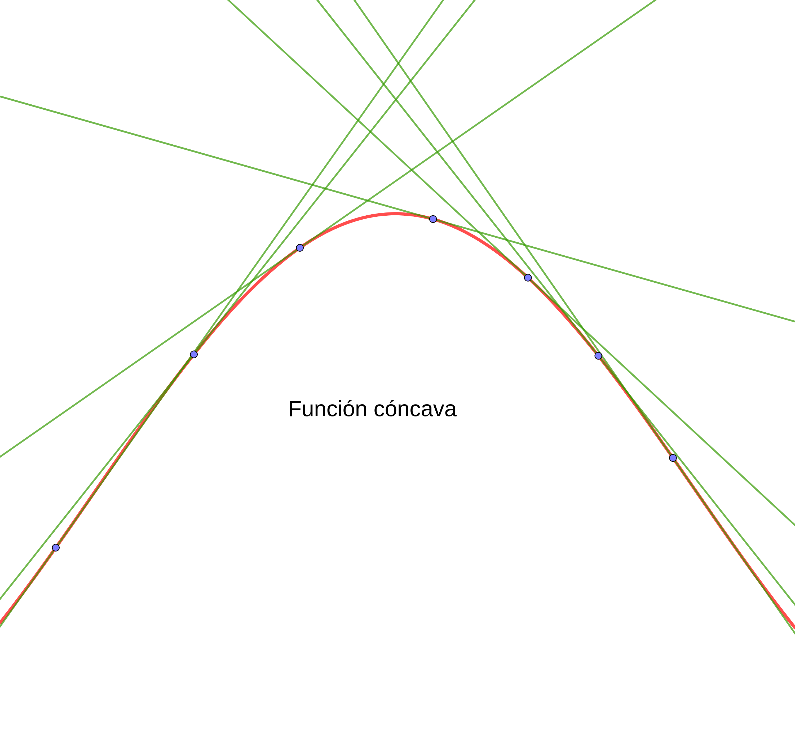
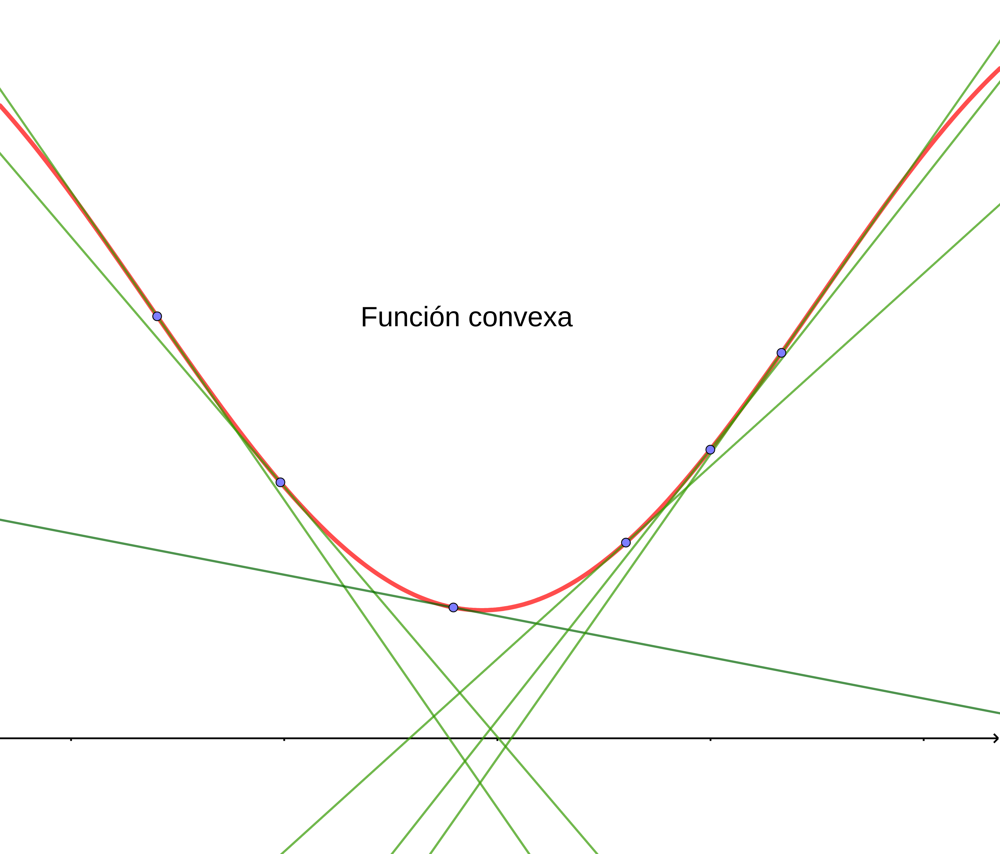
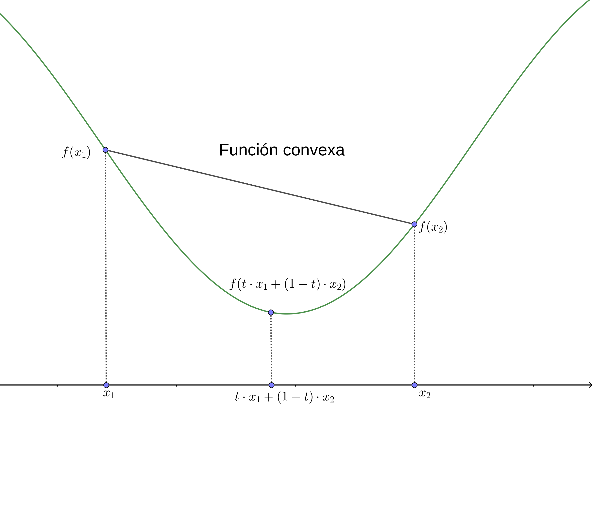
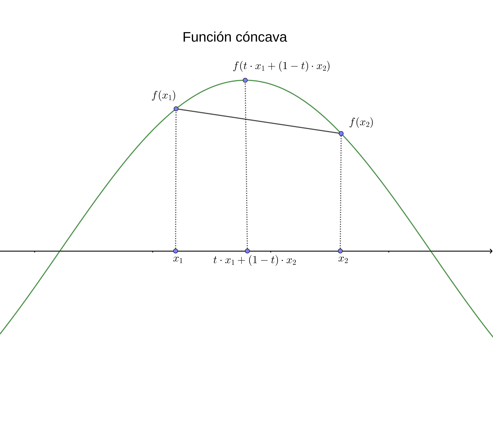
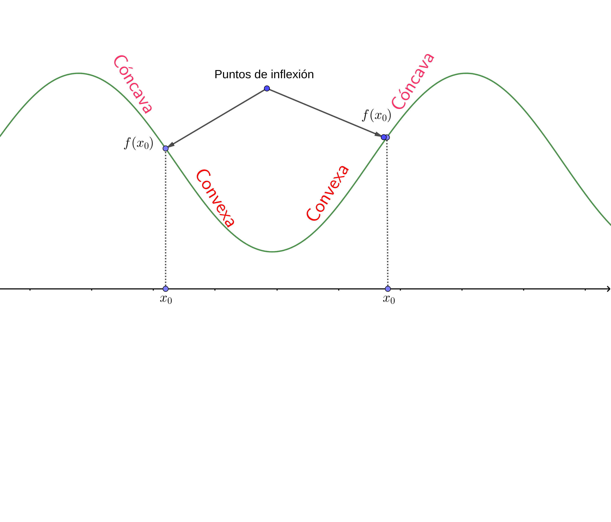
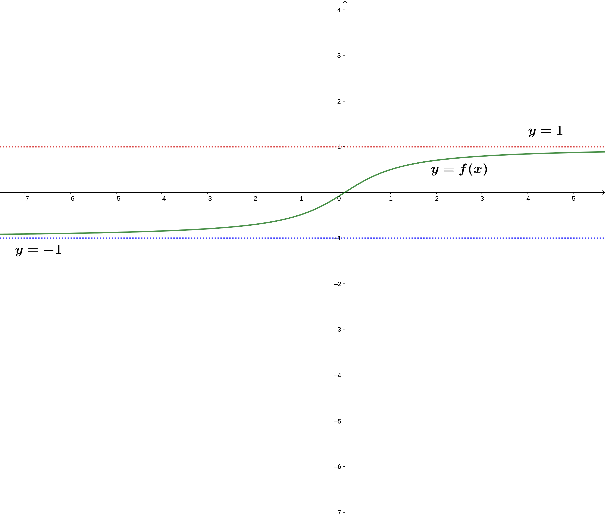
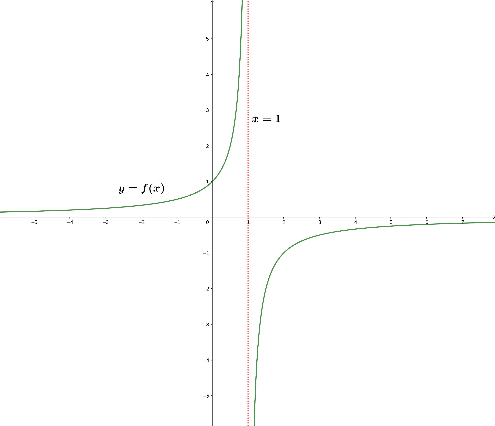
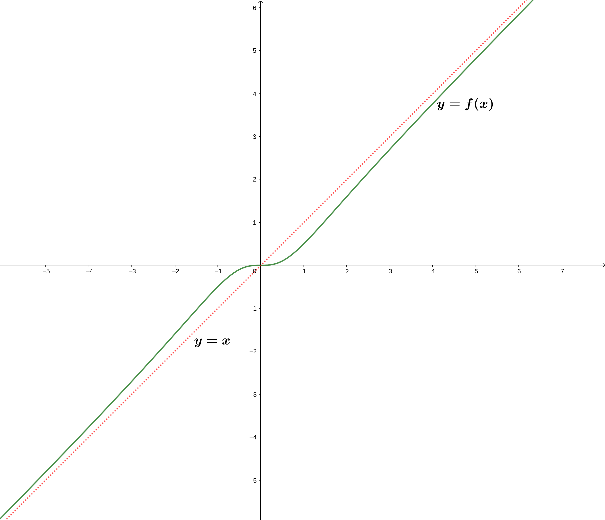
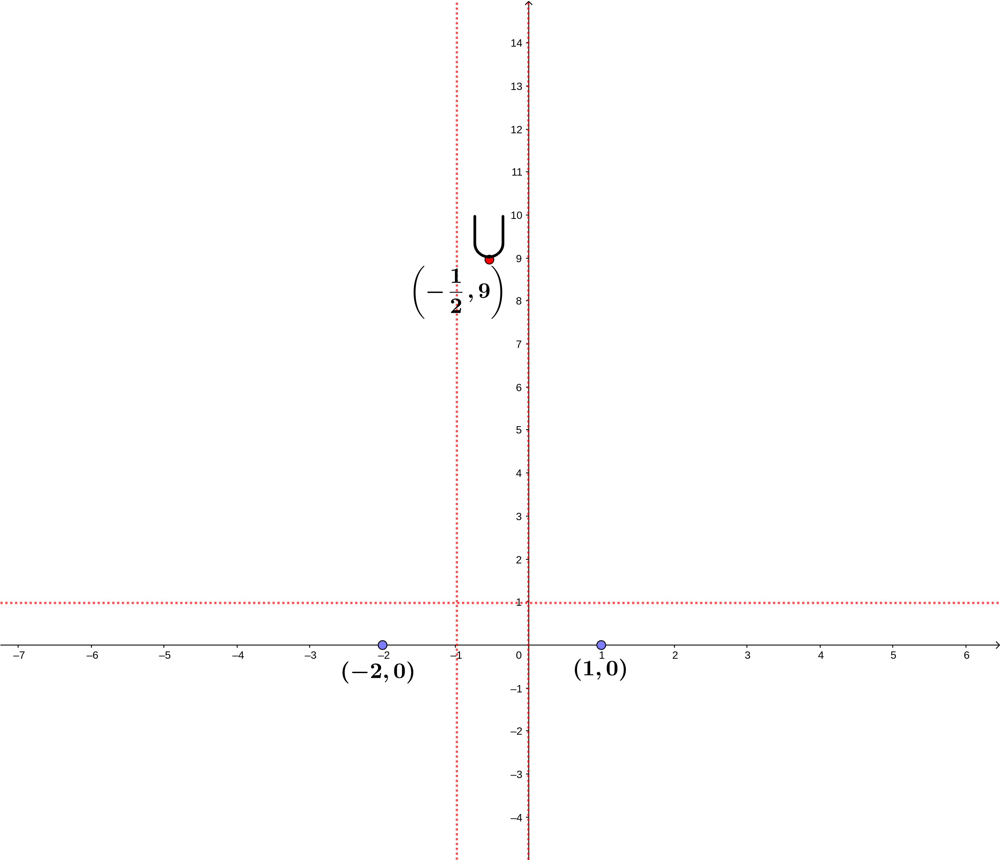

![]()
n=6Cálculo I
Aplicaciones de la Derivada
2026-01-05
Fórmula de Taylor
Introducción
La idea fundamental de la fórmula de Taylor es aproximar localmente una función en un entorno de un valor determinado por las funciones más manejables que se conocen, los polinomios.
Dicho de manera más explícita, consideremos una función \(f:(a,b)\longrightarrow\mathbb{R}\) que se puede derivar hasta un cierto orden, pongamos \(n+1\), para un cierto valor \(n\) natural, y sea \(x_0\in (a,b)\) un punto del interior del dominio de \(f\). Queremos hallar un polinomio \(P_n(x)\) tal que se verifique que \(f\) y \(P_n\) sean “iguales” en \(x_0\) hasta orden \(n\): \[ \lim_{x\to x_0}\frac{f(x)-P_n(x)}{(x-x_0)^m} =0,\mbox{ para }m=0,1,\ldots,n. \]
Introducción
La condición anterior para \(m=0\) es la siguiente: \[ \lim_{x\to x_0}f(x)-P_n(x) =0,\ \Rightarrow P_n(x_0)=f(x_0), \] es decir, la función y el polinomio a hallar deben coincidir en el valor \(x_0\).
Introducción
La condición anterior para \(m=1\) es la siguiente: \[ \lim_{x\to x_0}\frac{f(x)-P_n(x)}{(x-x_0)} =0,\ \Rightarrow P_n'(x_0)=f'(x_0), \] es decir, la derivada de la función y el polinomio a hallar deben coincidir en el valor \(x_0\) ya que si aplicamos la regla de L’Hôpital (el límite es indeterminado de la forma \(\frac{0}{0}\) ya que recordemos que \(P_n(x_0)=f(x_0)\)): \[ \lim_{x\to x_0}\frac{f(x)-P_n(x)}{(x-x_0)} = \lim_{x\to x_0}\frac{f'(x)-P_n'(x)}{1}=0. \]
Introducción
En general, la condición para \(m\) entre \(0\) y \(n\) es la siguiente: \[ \lim_{x\to x_0}\frac{f(x)-P_n(x)}{(x-x_0)^m} =0,\ \Rightarrow P_n^{(m)}(x_0)=f^{(m)}(x_0), \] es decir, la derivada \(m\)-ésima de la función y el polinomio a hallar deben coincidir en el valor \(x_0\) ya que si aplicamos la regla de L’Hôpital \(m\) veces (el límite es indeterminado de la forma \(\frac{0}{0}\) ya que recordemos que \(P_n^{(i)}(x_0)=f^{(i)}(x_0)\) para los \(i\) anteriores desde \(0\) hasta \(m-1\)): \[ \lim_{x\to x_0}\frac{f(x)-P_n(x)}{(x-x_0)^m} = \lim_{x\to x_0}\frac{f'(x)-P_n'(x)}{m (x-x_0)^{m-1}}=\cdots = \lim_{x\to x_0}\frac{f^{(m)}(x)-P_n^{(m)}(x)}{m!}=0. \]
Introducción
Importante:
Las condiciones que debe verificar el polinomio \(P_n(x)\) para aproximar la función \(f(x)\) hasta orden \(n\) en un entorno del punto \(x_0\) son las siguientes: \[ P_n^{(m)}(x_0)=f^{(m)}(x_0),\mbox{ para }m=0,\ldots,n. \] En este caso decimos que el polinomio \(P_n(x)\) tiene en el punto \(x_0\) orden de contacto con \(f\) superior a \(n\).
Introducción
Ejemplo ilustrativo
En el enlace siguiente  se muestra la función \(f(x)=\sin x\) (en rojo) y los polinomios de grado \(1\), \(P_1(x)\) (la recta en azul discontinua), de grado \(3\), \(P_3(x)\) (la curva en azul discontinua) para \(x_0=0\). El polinomio \(P_2(x)\) coincide con el polinomio de grado \(1\) en este caso ya que el coeficiente de \(x^2\) vale \(0\) como veremos más adelante.
se muestra la función \(f(x)=\sin x\) (en rojo) y los polinomios de grado \(1\), \(P_1(x)\) (la recta en azul discontinua), de grado \(3\), \(P_3(x)\) (la curva en azul discontinua) para \(x_0=0\). El polinomio \(P_2(x)\) coincide con el polinomio de grado \(1\) en este caso ya que el coeficiente de \(x^2\) vale \(0\) como veremos más adelante.
En la casilla expansion point podéis cambiar el valor \(x_0\). Intentad escribir pi/2 y pi y observad qué ocurre.
Si clicáis en la casilla More terms en la parte de arriba del gráfico veréis los polinomios de grado \(5\), \(P_5(x)\) y de grado \(7\), \(P_7(x)\). Observad cómo cada vez los polinomios se aproximan más a la función \(f(x)\).
Observación.
La elección del punto \(x_0\) no es arbitraria. Hemos de elegir un valor \(x_0\) del que conozcamos el valor \(f(x_0)\) y las derivadas de cualquier orden en \(x_0\), \(f^{(m)}(x_0)\), \(m=1,2,\ldots\)
Introducción
Ejemplo (continuación)
En el ejemplo anterior donde recordemos que \(f(x)=\sin x\), debemos elegir un punto \(x_0\) en el cual conozcamos los valores de \(\sin x_0\) y \(\cos x_0\) ya que si conocemos dichos valores, conoceremos \(f(x_0)\) y las derivadas de cualquier orden: \[ f(x_0)=\sin x_0,\ f'(x_0)=\cos x_0,\ f''(x_0)=-\sin x_0,\ f'''(x_0)=-\cos x_0,\ f^{iv}(x_0)=\sin x_0,\ldots \] Algunos valores \(x_0\) elegibles en este caso son los siguientes: \(x_0=0,\frac{\pi}{6}, \frac{\pi}{4},\frac{\pi}{3},\frac{\pi}{2},\pi\) ya que conocemos el valor de \(\sin (x_0)\) y \(\cos(x_0)\) tal como se observa en la tabla siguiente:
| \(x_0\) | \(0\) | \(\frac{\pi}{6}\) | \(\frac{\pi}{4}\) | \(\frac{\pi}{3}\) | \(\frac{\pi}{2}\) | \(\pi\) |
|---|---|---|---|---|---|---|
| \(\sin(x_0)\) | \(0\) | \(\frac{1}{2}\) | \(\frac{\sqrt{2}}{2}\) | \(\frac{\sqrt{3}}{2}\) | \(1\) | \(0\) |
| \(\cos(x_0)\) | \(1\) | \(\frac{\sqrt{3}}{2}\) | \(\frac{\sqrt{2}}{2}\) | \(\frac{1}{2}\) | \(0\) | \(-1\) |
Cálculo del polinomio de Taylor
El resultado siguiente nos da una expresión del polinomio de Taylor:
Teorema. Expresión del polinomio de Taylor.
Sea \(n\) un valor natural. Sea \(f:(a,b)\longrightarrow\mathbb{R}\) una función real de variable real. Sea \(x_0\in (a,b)\) un punto interior del dominio de \(f\). Supongamos que \(f\) es derivable \(n+1\) veces en \(x_0\). Entonces el polinomio de Taylor de grado \(n\) con orden de contacto con \(f\) superior a \(n\) en \(x_0\) es el siguiente: \[ \begin{array}{rl} P_n(x) = & f(x_0)+f'(x_0)\cdot (x-x_0)+\frac{f''(x_0)}{2!}\cdot (x-x_0)^2+\cdots +\\ & +\frac{f^{(n)}(x_0)}{n!}\cdot (x-x_0)^n. \end{array} \]
Cálculo del polinomio de Taylor
Contenido bastante técnico.
Demostración
Vamos a demostrar la fórmula anterior por inducción sobre \(n\).
Para \(n=0\), \(P_0(x)=f(x_0)\), que por definición es el polinomio de Taylor de grado \(0\) o constante.
Suponemos cierto para \(n\), es decir suponemos que: \[ P_n(x) = f(x_0)+f'(x_0)\cdot (x-x_0)+\frac{f''(x_0)}{2!}\cdot (x-x_0)^2+\cdots +\frac{f^{(n)}(x_0)}{n!}\cdot (x-x_0)^n. \] Hemos de demostrar que: \[ \begin{array}{rl} P_{n+1}(x) = & f(x_0)+f'(x_0)\cdot (x-x_0)+\frac{f''(x_0)}{2!}\cdot (x-x_0)^2+\cdots + \frac{f^{(n)}(x_0)}{n!}\cdot (x-x_0)^n+\\ & +\frac{f^{(n+1)}(x_0)}{(n+1)!}\cdot (x-x_0)^{n+1} = P_n(x)+\frac{f^{(n+1)}(x_0)}{(n+1)!}\cdot (x-x_0)^{n+1}. \end{array} \]
Cálculo del polinomio de Taylor
Por hipótesis de inducción, sabemos que: \(P_n^{(i)}(x_0)=f^{(i)}(x_0)\), para \(i=0,\ldots,n\) ya que recordemos que \(P_n(x)\) es el polinomio de Taylor de grado \(n\).
Para verificar que \(P_{n+1}(x)\) correspondiente a la expresión anterior es el polinomio de Taylor de grado \(n+1\), hay que verificar las igualdades siguientes: \(P_{n+1}^{(i)}(x_0)=f^{(i)}(x_0)\), para \(i=0,\ldots,n+1\).
Si \(i\) está entre \(0\) y \(n\), tenemos que: \[ P_{n+1}^{(i)}(x)=P_{n}^{(i)}(x)+(n+1)\cdots (n+2-i)\cdot\frac{f^{(n+1)}(x_0)}{(n+1)!}\cdot (x-x_0)^{n+1-i}. \] Si evaluamos la expresión anterior en \(x=x_0\), obtenemos: \[ P_{n+1}^{(i)}(x_0)=P_{n}^{(i)}(x_0)+(n+1)\cdots (n+2-i)\cdot\frac{f^{(n+1)}(x_0)}{(n+1)!}\cdot (x_0-x_0)^{n+1-i} = P_n^{(i)}(x_0)=f^{(i)}(x_0), \] ya que \(n+1-i>0\) por lo que el segundo sumando será nulo y la última igualdad es cierta por hipótesis de inducción.
Cálculo del polinomio de Taylor
Sólo falta demostrar el caso \(i=n+1\). Si calculamos la derivada \(n+1\)-ésima del polinomio \(P_{n+1}(x)\) obtenemos: \[ P_{n+1}^{(n+1)}(x)=P_n^{(n+1)}(x)+f^{(n+1)}(x_0) = f^{(n+1)}(x_0), \] ya que \(P_n^{(n+1)}(x)=0\) al ser \(P_n(x)\) un polinomio de grado \(n\) y por tanto la derivada \(n+1\)-ésima del mismo será 0.
Concluimos por tanto que la derivada \(n+1\)-ésima del polinomio \(P_{n+1}(x)\) será la constante \(f^{(n+1)}(x_0)\) y, en particular, se cumplirá que \(P_{n+1}^{(n+1)}(x_0)=f^{(n+1)}(x_0)\), tal como queríamos demostrar.
Ejemplo
Ejemplo
Consideremos la función \(f(x)=\sin (x)\) y el punto \(x_0=0\). Vamos a hallar el polinomio de Taylor de grado \(n\) de \(f(x)\) en \(x_0=0\).
Lo primero que hemos de calcular a la vista de la expresión vista en el teorema anterior que nos da la expresión del polinomio de Taylor es el valor de la función en \(x_0\), \(f(x_0)\) y el valor de las derivadas de \(f\) en \(x_0\), \(f^{(m)}(x_0)\), para \(m=1,2,\ldots\)
Los valores de \(f^{(m)}(0)\) valen lo siguiente: \[ f(0)=\sin 0=0,\ f'(0)=\cos 0=1,\ f''(0)=-\sin 0=0,\ f'''(0)=-\cos 0 =-1,\ f^{(iv)}(0)=\sin 0 =0, \ldots \] A partir de los cálculos anteriores podemos deducir que \(f^{(n)}(0)=0\), si \(n\) es par y \(f^{(n)}(0)=\pm 1\), si \(n\) es impar y valdrá \(1\) si \(n=1,5,9,\ldots\) y \(-1\) si \(n=3,7,11,\ldots\)
Intentemos escribir el resultado anterior de forma más “compacta”. Decir que \(n\) es par es equivalente a decir que existe un valor \(k\) natural tal que \(n=2k\) y decir que \(n\) es impar es equivalente a decir que existe un valor \(k\) natural tal que \(n=2k+1\). Por tanto, las condiciones anteriores se pueden escribir como: \(f^{(2k)}(0)=0\), \(f^{(2k+1)}(0)=\pm 1\).
Ejemplo
Observemos además que los valores de \(n\) para los que la derivada \(n\)-ésima valía \(1\), (\(n=1,5,9,\ldots\)) corresponde a valores de \(k\) par ya que \(1=2\cdot 0+1,\ 5=2\cdot 2+1,\ 9=2\cdot 4+1,\ldots\) y los valores de \(n\) para los que la derivada \(n\)-ésima valía \(-1\) (\(n=3,7,11,\ldots\)) corresponde a valores de \(k\) impar ya que \(3=2\cdot 1+1,\ 7=2\cdot 3+1,\ 11=2\cdot 5+1,\ldots\)
Por tanto, la condición \(f^{(2k+1)}(0)=\pm 1\) puede escribirse como \(f^{(2k+1)}(0)=(-1)^k\) ya que la expresión \((-1)^k\) da \(1\) para los \(k\) pares y \(-1\), para los \(k\) impares.
En resumen, tenemos lo siguiente: \(f^{(2k)}(0)=0\), \(f^{(2k+1)}(0)=(-1)^k\), para \(k=0,1,2,3,\ldots\)
Sea \(n\) un natural. Consideremos dos casos:
- \(n\) par. En este caso, el polinomio de Taylor de grado \(n\) es el siguiente: \[ P_n(x)=f(0)+f'(0)\cdot x+\frac{f''(0)}{2!}\cdot x^2+\cdots + \frac{f^{n}(0)}{n!}\cdot x^n. \] Observemos que el último término del polinomio anterior será \(0\) ya que hemos dicho que \(f^{(n)}(0)=0\) para \(n\) par. Entonces el polinomio \(P_n(x)\) se puede escribir como: \[ P_n(x)=f(0)+f'(0)\cdot x+\frac{f''(0)}{2!}\cdot x^2+\cdots + \frac{f^{n-1}(0)}{(n-1)!}\cdot x^{n-1}. \]
Ejemplo
Si eliminamos los términos correspondientes a derivadas pares al ser nulos, nos queda la expresión siguiente: \[ P_n(x)=x-\frac{x^3}{3!}+\frac{x^5}{5!}+\cdots + \frac{(-1)^k x^{2k+1}}{(2k+1)!}=\sum_{i=0}^k \frac{(-1)^i x^{2i+1}}{(2i+1)!}, \] donde \(k\) es tal que \(n-1=2k+1\), o, lo que es lo mismo, \(k=\frac{n-2}{2}\).
Consideremos por ejemplo \(n=14\), en este caso \(k=\frac{14-2}{2}=6\). El polinomio de Taylor de \(f(x)=\sin x\) de grado \(14\) en \(x_0=0\) es el siguiente: \[ \begin{array}{rl} P_{14}(x) & =x-\frac{x^3}{3!}+\frac{x^5}{5!}-\frac{x^7}{7!}+\frac{x^9}{9!}-\frac{x^{11}}{11!}+\frac{x^{13}}{13!},\\ & = x-\frac{x^3}{6}+\frac{x^5}{120}-\frac{x^7}{5040}+\frac{x^9}{362880}-\frac{x^{11}}{39916800}+\frac{x^{13}}{6227020800}. \end{array} \]
Ejemplo
- \(n\) impar. En este caso, el polinomio de Taylor de grado \(n\) es el siguiente: \[
P_n(x)=f(0)+f'(0)\cdot x+\frac{f''(0)}{2!}\cdot x^2+\cdots + \frac{f^{n}(0)}{n!}\cdot x^n.
\] Si eliminamos los términos correspondientes a derivadas pares al ser nulos, nos queda la expresión siguiente: \[
P_n(x)=x-\frac{x^3}{3!}+\frac{x^5}{5!}+\cdots + \frac{(-1)^k x^{2k+1}}{(2k+1)!}=\sum_{i=0}^k \frac{(-1)^i x^{2i+1}}{(2i+1)!},
\] donde \(k\) es tal que \(n=2k+1\), o, lo que es lo mismo, \(k=\frac{n-1}{2}\). Consideremos por ejemplo \(n=11\), en este caso \(k=\frac{11-1}{2}=5\). El polinomio de Taylor de \(f(x)=\sin x\) de grado \(11\) en \(x_0=0\) es el siguiente: \[
P_{11}(x) =x-\frac{x^3}{3!}+\frac{x^5}{5!}-\frac{x^7}{7!}+\frac{x^9}{9!}-\frac{x^{11}}{11!}
= x-\frac{x^3}{6}+\frac{x^5}{120}-\frac{x^7}{5040}+\frac{x^9}{362880}-\frac{x^{11}}{39916800}.
\] Si váis al enlace siguiente
 y apretáis una vez la casilla
y apretáis una vez la casilla More termsen la secciónSeries expansion at x=0os aparecerá el polinomio de Taylor de grado 11 y si volvéis a apretar, os aparecerá el polinomio de Taylor de grado 19 que “incluye” el polinomio de Taylor de grado 14.
Ejemplo
La siguiente animación muestra cómo el polinomio de Taylor \(\color{red}{P_n(x)}\) se aproxima a \(\color{blue}{f(x) = \sin(x)}\) al aumentar el grado \(n\).
Ejemplo
La siguiente animación muestra cómo el polinomio de Taylor \(P_n(x)\) se aproxima a \(f(x) = e^x\) al aumentar el grado \(n\).
Desarrollos de MacLaurin
Ejercicio
Hallar el polinomio de Taylor de grado \(n\) para la misma función que el ejemplo anterior en el punto \(x_0=\frac{\pi}{2}\).
Definición.
Dada una función \(f:(a,b)\longrightarrow \mathbb{R}\), \(n+1\) veces derivable tal que \(0\in (a,b)\) y sea \(P_n(x)\) el polinomio de Taylor de grado \(n\) en \(x_0=0\). Dicho polinomio se denomina polinomio o expansión de MacLaurin de grado \(n\) de \(f\) .
En el ejemplo anterior, hemos hallado el polinomio de MacLaurin de grado \(n\) de la función \(f(x)=\sin x\).
Error en el polinomio de Taylor
Una vez conocido cómo hallar el polinomio de Taylor de una función \(f(x)\) en un punto \(x_0\) de su dominio, podemos usar dicho polinomio o dicha expansión para aproximar el valor de dicha función \(f(x)\) para valores \(x\) cercanos a \(x_0\).
Ahora bien, si no tenemos manera de estimar o calcular alguna cota del error que estamos cometiendo, dicha aproximación no tiene ningún sentido ya que sería como ir a ciegas, es decir, no sabemos hasta qué punto el valor \(P_n(x)\) aproxima bien o no el valor de \(f(x)\).
El siguiente resultado nos da una expresión que permite acotar el error cometido usando el polinomio de Taylor.
Error en el polinomio de Taylor
Teorema. Error en la fórmula de Taylor
Sea \(f\) una función \(f:(a,b)\longrightarrow \mathbb{R}\), sea \(x_0\in (a,b)\) un punto interior del dominio de \(f\) y supongamos que \(f\) es \(n+1\) veces derivable en un entorno de \(x_0\). Sea \(P_n(x)\) el polinomio de Taylor de grado \(n\) en \(x_0\). Entonces si \(x\) es un punto del entorno anterior de \(x_0\), se verifica: \[ f(x)-P_n(x)=\frac{f^{n+1}(c)}{m\cdot n!}\cdot (x-c)^{n-m+1}\cdot (x-x_0)^m, \] donde \(c\) es un punto que está situado entre \(x_0\) y \(x\) (o entre \(x\) y \(x_0\), dependiendo de cuál de los dos valores es el menor y el mayor) y se denota por \(x\in <x_0,x>\) y \(m\) es un natural entre \(1\) y \(n+1\). Dicha expresión es conocida por resto de Cauchy.
Error en el polinomio de Taylor
Observación.
A la expresión \(f(x)-P_n(x)\) se le denota por \(R_n(x-x_0)\), \(R\) de resto.
Corolario.
En las condiciones del teorema anterior, considerando \(m=n+1\), tenemos la expresión siguiente conocida como resto de Lagrange: \[ f(x)-P_n(x)=\frac{f^{n+1}(c)}{(n+1)!}\cdot (x-x_0)^{n+1}. \]
Esta es la expresión más conocida de la expresión del error del polinomio de Taylor de grado \(n\).
Error en el polinomio de Taylor
Contenido muy técnico.
Demostración
Sea \(x\in (a,b)\) un valor del interior del entorno de \(x_0\) donde \(f\) es \(n+1\) veces derivable. Fijado dicho valor de \(x\), se considera la función siguiente que depende de la variable \(t\): \[ F(t)=f(t)+\sum_{k=1}^n \frac{f^{(k)}(t)}{k!}\cdot (x-t)^k. \] Dicha función \(F(t)\) es continua y derivable en el intervalo \(<x_0,x>\) (recordemos que dicha expresión vale \((x_0,x)\), si \(x>x_0\) y \((x,x_0)\) si \(x<x_0\)) ya que es suma de productos de continuas y derivables: pensad que \(f\) es derivable por hipótesis, \(f^{(k)}\) será derivable ya que \(k\leq n\) y por ser \(f\) derivable \(n+1\) veces por hipótesis y la función \((x-t)^k\) será derivable al ser un polinomio en \(t\).
Error en el polinomio de Taylor
Hallemos el valor de la derivada de \(F\), \(F'(t)\): \[ \begin{array}{rl} F'(t) = & \displaystyle f'(t)+\sum_{k=1}^n \frac{f^{(k+1)}(t)}{k!}\cdot (x-t)^k -\sum_{k=1}^n k\cdot \frac{f^{(k)}(t)}{k!}(x-t)^{k-1} \\ = &\displaystyle f'(t)+\sum_{k=1}^n \frac{f^{(k+1)}(t)}{k!}\cdot (x-t)^k -\sum_{k=1}^n \frac{f^{(k)}(t)}{(k-1)!}(x-t)^{k-1}\\ = & f'(t)+\frac{f''(t)}{1!}\cdot (x-t)+\frac{f'''(t)}{2!}\cdot (x-t)^2+\cdots+ \frac{f^{(n)}(t)}{(n-1)!}\cdot (x-t)^{n-1} + \frac{f^{(n+1)}(t)}{n!}\cdot (x-t)^n\\ & -\left(f'(t)+\frac{f''(t)}{1!}\cdot (x-t)+\frac{f'''(t)}{2!}\cdot (x-t)^2 +\cdots + \frac{f^{(n)}(t)}{(n-1)!}\cdot (x-t)^{n-1} \right) = \frac{f^{(n+1)}(t)}{n!}\cdot (x-t)^n. \end{array} \] Consideremos ahora una función \(G\) cualquiera continua en el intervalo \(<x_0,x>\) cerrado y diferenciable en el mismo intervalo anterior pero abierto tal que \(G'(t)\neq 0\) para todo \(t\in <x_0,x>\) y \(G(x_0)\neq G(x)\).
Si aplicamos el Teorema del valor medio de Cauchy al intervalo \(<x_0,x>\) a las funciones \(F\) y \(G\), tenemos que existe un valor \(c\in <x_0,x>\) tal que: \[ G'(c)\cdot (F(x)-F(x_0))=F'(c)\cdot (G(x)-G(x_0)). \]
Error en el polinomio de Taylor
El valor de \(F(x)-F(x_0)\) es precisamente el error que cometemos al aproximar \(f(x)\) por el polinomio de Taylor de grado \(n\), \(P_n(x)\) ya que: \[ F(x)-F(x_0)=f(t)-\left(f(x_0)+\sum_{k=1}^n \frac{f^{(k)}(x_0)}{k!}\cdot (x-x_0)^k\right)=f(x)-P_n(x). \] Usando la expresión deducida del Teorema del valor medio de Cauchy, podemos escribir que: \[ F(x)-F(x_0)=f(x)-P_n(x)=R_n(x-x_0)=\frac{F'(c)}{G'(c)}\cdot (G(x)-G(x_0)). \] Diferentes expresiones del error se obtienen eligiendo \(G\) de una determinada forma:
- Si \(G(t)=(x-t)^{n+1}\), tenemos que \(G'(t)=-(n+1)\cdot (x-t)^n\) y, por tanto: \[ \begin{array}{rl} R_n(x-x_0) & =\frac{F'(c)}{G'(c)}\cdot (G(x)-G(x_0))=\frac{\frac{f^{(n+1)}(c)}{n!}\cdot (x-c)^n}{-(n+1)\cdot (x-c)^n}\cdot \left(-(x-x_0)^{n+1}\right)\\ & =\frac{f^{(n+1)}(c)}{(n+1)!}\cdot (x-x_0)^{n+1}. \end{array} \]
Error en el polinomio de Taylor
- Si \(G(t)=(x-t)^{m}\), con \(m\) natural entre \(1\) y \(n+1\), tenemos que \(G'(t)=-m\cdot (x-t)^{m-1}\) y, por tanto: \[ \begin{array}{rl} R_n(x-x_0) & =\frac{F'(c)}{G'(c)}\cdot (G(x)-G(x_0))=\frac{\frac{f^{(n+1)}(c)}{n!}\cdot (x-c)^n}{-m\cdot (x-c)^{m-1}}\cdot \left(-(x-x_0)^{m}\right)\\ & =\frac{f^{(n+1)}(c)}{m\cdot n!}\cdot (x-c)^{n-m+1}\cdot (x-x_0)^{m}, \end{array} \] tal como queríamos demostrar.
Ejemplo
Ejemplo: cálculo aproximado de \(\sin x\)
Vamos a intentar aproximar la función \(f(x)=\sin x\) para un \(x\) próximo a \(0\).
Recordemos que el polinomio de Taylor (de hecho, el de MacLaurin) de la función \(f(x)\) de grado \(n\) es el siguiente: \[ P_n(x)=\sum_{i=0}^k \frac{(-1)^i x^{2i+1}}{(2i+1)!}, \] con \(k=\frac{n-2}{2}\), si \(n\) es par y \(k=\frac{n-1}{2}\), si \(n\) es impar.
El problema que nos planteamos es el siguiente: dado \(x\) y \(\epsilon\) un error absoluto máximo que estamos dispuestos a cometer, calcular el valor de \(P_n(x)\) tal que \(|f(x)-P_n(x)=|\sin x-P_n(x)|\leq \epsilon\).
El primer paso es calcular el valor de \(n\). Nos fijamos a partir de la expresión de \(P_n(x)\) que si \(n\) es par el grado del polinomio de MacLaurin tiene grado \(n-1\) ya que la potencia más alta de \(x\), \(2k+1\) vale \(2k+1=n-1\).
Supondremos que \(n\) es par ya que tiene un término menos que si \(n\) es impar y esto es una ventaja a la hora de computar \(P_n(x)\).
Ejemplo
El error cometido \(R_n(x)\) usando el teorema anterior vale: (usaremos la fórmula de Lagrange) \[ f(x)-P_n(x)=R_n(x)=\frac{f^{n+1}(c)}{(n+1)!}\cdot x^{n+1}. \] Dicho error se puede acotar por: \[ |f(x)-P_n(x)|=|R_n(x)|=\left|\frac{f^{n+1}(c)}{(n+1)!}\cdot x^{n+1}\right|\leq \max_{c\in <0,x>}\left|f^{n+1}(c)\right|\cdot \frac{|x|^{n+1}}{(n+1)!}. \] Al ser \(n\) par, \(|f^{n+1}(c)|=|\cos c|\) ya que \(n+1\) es impar y recordemos que cualquier derivada impar era \(\pm \cos c\). Por tanto, podemos acotar \(\displaystyle \max_{c\in <0,x>}\left|f^{n+1}(c)\right|\) por \(1\): \(\displaystyle\max_{c\in <0,x>}\left|f^{n+1}(c)\right|\leq 1\) y la cota del error será: \[ |f(x)-P_n(x)|=|R_n(x)|\leq \frac{|x|^{n+1}}{(n+1)!}. \] La \(n\) buscada debe verificar: \(\frac{|x|^{n+1}}{(n+1)!}\leq \epsilon\).
Ejemplo
Como para cualquier valor de \(x\) el límite \(\displaystyle\lim_{n\to\infty} \frac{|x|^{n+1}}{(n+1)!}=0\), seguro que existe una \(n\) tal que \(\frac{|x|^{n+1}}{(n+1)!}\leq\epsilon\).
La función siguiente nos calcula la \(n\) dado \(x\) y el error en python asegurándose que \(n\) es par:
Ejemplo
El valor de \(n\) para \(x=0.5\) con un error máximo permitido de \(0.0001\) será:
El polinomio de Taylor sería en este caso: \[ P_6(x)=x-\frac{x^3}{3!}+\frac{x^5}{5!}. \] El valor de \(P_6(0.5)\) vale:
0.47942708333333334Ejemplo
Sabemos que el valor anterior evalúa \(\sin 0.5\) con un error menor que \(0.0001\). Comprobémoslo en python:
1.54472913033166e-6Ejemplo
Ejemplo: cálculo de \(\mathrm{e}\)
Vamos a calcular \(\mathrm{e}\) con 6 cifras decimales exactas.
Para ello vamos a calcular el polinomio de Taylor de la función \(f(x)=\mathrm{e}^x\) para \(x_0=0\), \(P_n(x)\) y aproximaremos \(f(1)=\mathrm{e}\) por \(P_n(1)\) cometiendo un error menor que \(0.000001\).
Para calcular el polinomio de Taylor de \(f(x)=\mathrm{e}^x\), hemos de calcular \(f^{k}(x)\) para cualquier valor \(k\) natural. En este caso, observamos que \(f^{(k)}(x)=\mathrm{e}^x\) siempre vale lo mismo. Por tanto: \[ P_n(x)=\sum_{k=0}^n \frac{f^{(k)}(0)}{k!}\cdot x^k = \sum_{k=0}^n \frac{x^k}{k!}, \] ya que \(f^{(k)}(0)=\mathrm{e}^0=1.\)
Seguidamente vamos a calcular el valor que \(n\) que nos asegure que el error cometido para \(x=1\) usando la expresión anterior \(P_n(1)\) en lugar de \(f(1)=\mathrm{e}\) es menor que \(e=0.000001\).
Ejemplo
Recordemos la expresión de la fórmula del error: \[ |f(x)-P_n(x)|=|R_n(x)|=\left|\frac{f^{n+1}(c)}{(n+1)!}\cdot x^{n+1}\right|\leq \max_{c\in <0,x>}\left|f^{n+1}(c)\right|\cdot \frac{|x|^{n+1}}{(n+1)!}. \] La expresión anterior para \(x=1\) vale: \[ \begin{array}{rl} |f(1)-P_n(1)| & =|R_n(1)|=\left|\frac{f^{n+1}(c)}{(n+1)!}\cdot 1^{n+1}\right|\leq \max_{c\in (0,1)}\left|f^{n+1}(c)\right|\cdot \frac{1}{(n+1)!}=\max_{c\in (0,1)}\mathrm{e}^c\cdot \frac{1}{(n+1)!}\\ & =\frac{\mathrm{e}}{(n+1)!}. \end{array} \] En la última igualdad hemos usado que la función \(f(x)=\mathrm{e}^x\) es creciente y por tanto \(\displaystyle\max_{c\in (0,1)}\mathrm{e}^c=\mathrm{e}^1=\mathrm{e}\).
Vemos que la cota del error depende del valor de \(\mathrm{e}\) que es precisamente el valor que queremos calcular.
No sabemos el valor exacto de \(\mathrm{e}\) pero podemos usar que es menor que \(3\): \(\mathrm{e}<3\).
La cota anterior será, pues: \[ |f(1)-P_n(1)|=|R_n(1)|=\frac{\mathrm{e}}{(n+1)!}<\frac{3}{(n+1)!}. \]
Ejemplo
La función siguiente nos calcula la \(n\) dado el error en python:
El valor de \(n\) para un error de \(0.000001\) vale:
n=9Ejemplo
El valor de \(\mathrm{e}\) con 6 cifras decimales exactas será: \[
\mathrm{e}\approx 1+1+\frac{1}{2!}+\frac{1}{3!}+\frac{1}{4!}+\frac{1}{5!}+\frac{1}{6!}+\frac{1}{7!}+\frac{1}{8!}+\frac{1}{9!}.
\] Si calculamos su valor en python, obtenemos:
2.7182815255731922Comprobamos que efectivamente tiene 6 cifras decimales exactas:
2.718281828459045Ejemplo
Ejemplo: generalización del binomio de Newton
Recordemos la fórmula del binomio de Newton: dados \(x,y\in\mathbb{R}\) y un natural \(N\), podemos desarrollar la potencia \((x+y)^N\) como: \[ (x+y)^N = \sum_{k=0}^N \binom{N}{k}\cdot x^k\cdot y^{N-k}. \] Sea ahora la función \(f(x)=(x+C)^N\), donde \(C\) es una constante cualquiera. Sea \(x_0\) un valor real. Queremos hallar el polinomio de Taylor de la función anterior alrededor de \(x=x_0\).
Usando la fórmula del binomio de Newton anterior, el polinomio de Taylor de \(f(x)\) de grado \(N\) alrededor del valor \(x=x_0\) es relativamente sencillo de obtener: \[ \begin{array}{rl} f(x)=(x+C)^N & \displaystyle =((x-x_0)+(C+x_0))=\sum_{k=0}^N \binom{N}{k}\cdot (x-x_0)^k\cdot (C+x_0)^{N-k}\\ & =\displaystyle \sum_{k=0}^N \binom{N}{k}\cdot (C+x_0)^{N-k}\cdot (x-x_0)^k. \end{array} \]
Ejemplo
Observad que el desarrollo anterior no tiene error ya que la expresión de la izquierda es un polinomio de grado \(N\). Otra manera de verlo es usar la expresión de la fórmula del error: \[ f(x)-P_N(x)=R_N(x-x_0)=\frac{f^{N+1}(c)}{(N+1)!}\cdot (x-x_0)^{N+1}. \] Ahora bien, como \(f(x)\) es un polinomio de grado \(N\), la derivada \(N+1\)-ésima en cualquier valor será \(0\) (\(f^{N+1}(c)=0\)) y, por tanto, \(R_N(x-x_0)=0\).
Podemos hallar en particular una expresión para \(f^{(k)}(x_0)\): \[ \begin{array}{rl} \frac{f^{(k)}(x_0)}{k!} & =\binom{N}{k}\cdot (C+x_0)^{N-k},\\ f^{(k)}(x_0) & =\binom{N}{k}\cdot k!\cdot (C+x_0)^{N-k} = N\cdot (N-1)\cdots (N-k+1)\cdot (C+x_0)^{N-k}. \end{array} \]
Ejemplo
Supongamos ahora que “generalizamos” la función \(f\) de la forma siguiente \(f(x)=(x+C)^\alpha\), donde \(\alpha\) no tiene por qué ser entero sino cualquier valor real. Sea \(x_0\) un valor real que supondremos distinto de \(-C\) para no tener problemas en caso en que \(\alpha <0\) ya que en este caso \(\displaystyle\lim_{x\to x_0}f(x)=\lim_{x\to x_0}(x+C)^\alpha = \lim_{x\to x_0} 0^\alpha =\lim_{x\to x_0}\frac{1}{0^{-\alpha}}=\frac{1}{0}=\infty\).
¿Cuál sería el polinomio de Taylor de grado \(n\) para dicha función \(f(x)\) en \(x=x_0\)?
Estaríamos tentados de generalizar la fórmula anterior de la forma siguiente: \[ P_n(x)=\sum_{k=0}^n \binom{\alpha}{k}\cdot (C+x_0)^{\alpha -k}\cdot (x-x_0)^k, \] pero ¿qué vale \(\binom{\alpha}{k}\)?. Pensad que sabemos calcular \(\binom{N}{k}\) si \(N\) es natural pero ahora “nuestra” \(N\) es \(\alpha\) y es un valor real cualquiera.
Como \(\binom{N}{k}\) se puede escribir como \(\binom{N}{k}=\frac{N\cdot (N-1)\cdots (N-k+1)}{k!}\), podríamos generalizar \(\binom{\alpha}{k}\) como \(\binom{\alpha}{k}=\frac{\alpha\cdot (\alpha-1)\cdots (\alpha-k+1)}{k!}\) y la expresión anterior ya tendría sentido.
De acuerdo, todo lo escrito hasta ahora está muy bien, pero ¿es cierta la fórmula anterior?
Ejemplo
Veamos que sí, que la fórmula anterior es cierta.
Primero calculemos las derivadas sucesivas de \(f(x)=(x+C)^\alpha\): \[ f'(x)=\alpha\cdot (x+C)^{\alpha-1},\ f''(x)=\alpha\cdot (\alpha-1)\cdot (x+C)^{\alpha-2},\ f'''(x)=\alpha\cdot (\alpha-1)\cdot (\alpha-2)\cdot (x+C)^{\alpha-3}, \] y, en general: \[ f^{(k)}(x)=\alpha\cdot (\alpha-1)\cdots (\alpha-k+1)\cdot (x+C)^{\alpha-k}. \] Si evaluamos en \(x=x_0\) obtenemos: \[ f^{(k)}(x_0)=\alpha\cdot (\alpha-1)\cdots (\alpha-k+1)\cdot (x_0+C)^{\alpha-k}=\binom{\alpha}{k}\cdot k!\cdot (x_0+C)^{\alpha-k}. \]
Ejemplo
El polinomio de Taylor de grado \(n\) de \(f(x)\) en \(x=x_0\) será: \[ \begin{array}{rl} P_n(x) & \displaystyle =\sum_{k=0}^n \frac{f^{(k)}(x_0)}{k!}\cdot (x-x_0)^k = \sum_{k=0}^n\frac{\alpha\cdot (\alpha-1)\cdots (\alpha-k+1)}{k!}\cdot (x_0+C)^{\alpha-k}\cdot (x-x_0)^k \\ & \displaystyle = \sum_{k=0}^n \binom{\alpha}{k}\cdot (x_0+C)^{\alpha-k}\cdot (x-x_0)^k, \end{array} \] tal como queríamos ver.
El error cometido será: \[ R_n(x-x_0)=\frac{f^{(n+1)}(c)}{(n+1)!}\cdot (x-x_0)^{n+1}=\binom{\alpha}{n+1}\cdot (c+C)^{\alpha-n-1}\cdot (x-x_0)^{n+1} \] donde \(c\in <x_0,x>\).
Ejemplo
Como aplicación, calculemos el polinomio de Taylor de la función \(f(x)=\frac{1}{\sqrt{x+1}}\) para \(x_0=2\).
En este caso \(\alpha = -\frac{1}{2}\) y \(C=1\).
Los valores de \(\binom{-\frac{1}{2}}{k}\) son los siguientes: \[ \binom{-\frac{1}{2}}{k} = \frac{-\frac{1}{2}\cdot\left(-\frac{1}{2}-1\right)\cdots \left(-\frac{1}{2}-k+1\right)}{k!}=\frac{-\frac{1}{2}\cdot\left(-\frac{3}{2}\right)\cdots \left(-\frac{(2k-1)}{2}\right)}{k!}=\frac{(-1)^k\cdot (2k-1)!!}{2^k\cdot k!}. \] El polinomio de Taylor de grado \(n\) para \(f(x)\) en \(x_0=2\) será: \[ P_n(x)=\sum_{k=0}^n \frac{(-1)^k\cdot (2k-1)!!}{2^k\cdot k!}\cdot 3^{-\frac{1}{2}-k}\cdot (x-2)^k=\sum_{k=0}^n \frac{(-1)^k\cdot (2k-1)!!}{2^k\cdot \sqrt{3^{2k+1}}\cdot k!}\cdot (x-2)^k. \] El error cometido será: \[ R_n(x-2)=\binom{-\frac{1}{2}}{n+1}\cdot (1+c)^{-\frac{1}{2}-n-1}\cdot (x-2)^{n+1}=\frac{(-1)^{n+1}\cdot (2n+1)!!}{2^{n+1}\cdot \sqrt{(1+c)^{2n+3}}\cdot (n+1)!}\cdot (x-2)^{n+1}. \]
Ejemplo
Si suponemos que \(x>2\), usando que \(c\in (2,x)\), y, por tanto, \(\frac{1}{1+c}\leq \frac{1}{3}\), podemos acotar el error cometido por: \[ |R_n(x-2)|\leq\frac{(2n+1)!!}{2^{n+1}\cdot \sqrt{3^{2n+3}}\cdot (n+1)!}\cdot (x-2)^{n+1}. \] Consideremos \(x=2.25\). Calculemos el valor de \(n\) para calcular \(f(2.25)\) con un error menor que \(0.000001\):
Ejemplo
El valor del grado \(n\) del polinomio de Taylor será:
n=4Ejemplo
El polinomio de Taylor será: \[ P_4(x)=\frac{1}{\sqrt{3}}-\frac{1}{6 \sqrt{3}}\cdot (x-2)+\frac{1}{24\sqrt{3}}\cdot (x-2)^2-\frac{5}{432\sqrt{3}}\cdot (x-2)^3+\frac{35}{10368\sqrt{3}}\cdot (x-2)^4. \] Calculemos el valor de \(P_4(2.25)\):
0.5547007267350142Ejemplo
Comprobemos que tiene efectivamente 6 cifras decimales exactas:
0.5547001962252291Propiedades del desarrollo de Taylor
La proposición siguiente es útil si queremos hallar el polinomio de Taylor de una función que puede escribirse como suma, producto o cociente de funciones donde es más fácil conocer su polinomio de Taylor:
Sean \(f\), \(g\) funciones reales de variable real \(f,g:(a,b)\longrightarrow\mathbb{R}\) definidas en \((a,b)\) y sea \(x_0\in (a,b)\) un punto del interior de su dominio. Sean \(P_n(x)\) y \(Q_n(x)\) los polinomios de Taylor de grado \(n\) de las funciones \(f\) y \(g\), respectivamente en un entorno del punto \(x_0\).
Propiedades del desarrollo de Taylor
Proposición.
El polinomio de Taylor de toda función escrita como combinación lineal de \(f\) y \(g\), \(\lambda f+\mu g\), con \(\lambda,\mu\in \mathbb{R}\) constantes reales es \(\lambda P_n(x)+\mu Q_n(x)\).
La función producto \(f\cdot g\) admite un polinomio de Taylor en el mismo entorno del punto \(x_0\). Dicho polinomio de Taylor de la función \(f\cdot g\) se calcula realizando el producto de los dos polinomios, \(P_n(x)\cdot Q_n(x)\) y eliminando todos los términos de grado mayor o igual que \(n+1\) en \((x-x_0)\).
Propiedades del desarrollo de Taylor
Proposición.
- Si \(g(x_0)\neq 0\), el cociente \(\frac{f}{g}\) admite un polinomio de Taylor en este entorno. Dicho polinomio de Taylor de la función \(\frac{f}{g}\) se calcula de realizar la operación \(\frac{P_n(x)}{Q_n(x)}\), desarrollando esta expresión en potencias de \((x-x_0)\) y eliminando todos los términos de grado mayor o igual que \(n+1\).
Ejemplo
Ejemplo
Como ejemplo de aplicación, calculemos el polinomio de Taylor grado \(n\) de la función \(f(x)=\frac{1}{1-x^2}\) en un punto \(x_0\) cualquiera distinto de \(\pm 1\) ya que los valores \(\pm 1\) no pertenecen al dominio de \(f(x)\). Pensad que \(\displaystyle\lim_{x\to\pm 1}f(x)=\lim_{x\to\pm 1}\frac{1}{1-x^2}=\frac{1}{0}=\infty\).
Podemos descomponer la función \(f(x)\) de la forma siguiente: \[ \frac{1}{1-x^2}=\frac{1}{2}\left(\frac{1}{1-x}+\frac{1}{1+x}\right). \] Para calcular los polinomios de Taylor de las funciones \(f_1(x)=\frac{1}{1-x}\) y \(f_2(x)=\frac{1}{1+x}\) en un punto cualquiera \(x_0\), a los que llamaremos \(P_{1,n}(x)\) y \(P_{2,n}(x)\), respectivamente, podemos usar la técnica vista en el ejemplo anterior donde generalizábamos la fórmula de Newton.
Ejemplo
Escribimos \(f_1(x)\) de la forma siguiente: \(f_1(x)=-\frac{1}{x-1}\). Entonces el valor de \(\alpha\) vale \(\alpha=-1\) y \(C=-1\). El polinomio \(P_{1,n}(x)\) será el siguiente: \[ P_{1,n}(x)=-\sum_{k=0}^n\binom{-1}{k}\cdot (x_0-1)^{-1-k}\cdot (x-x_0)^k. \] Calculemos el valor de \(\binom{-1}{k}\): \[ \binom{-1}{k}=\frac{(-1)\cdot (-2)\cdots (-1-k+1)}{k!}=\frac{(-1)^k\cdot k!}{k!}=(-1)^k. \] El valor del polinomio \(P_{1,n}(x)\) será el siguiente: \[ P_{1,n}(x)=-\sum_{k=0}^n\frac{(-1)^k}{(x_0-1)^{k+1}}\cdot (x-x_0)^k. \]
Ejemplo
Usando el mismo razonamiento anterior, podemos obtener el polinomio \(P_{2,n}(x)\) donde \(\alpha =-1\) y \(C=1\): \[ P_{2,n}(x)=\sum_{k=0}^n\frac{(-1)^k}{(x_0+1)^{k+1}}\cdot (x-x_0)^k. \] Usando que \(f(x)=\frac{1}{2}\left(\frac{1}{1-x}+\frac{1}{1+x}\right)\), el polinomio de Taylor de la función \(f(x)\) en \(x_0\) de grado \(n\) será: \[ P_n(x)=\frac{1}{2}\left(P_{1,n}(x)+P_{2,n}(x)\right)=\frac{1}{2}\sum_{k=0}^n (-1)^k\left(\frac{1}{(x_0+1)^{k+1}}-\frac{1}{(x_0-1)^{k+1}}\right)\cdot (x-x_0)^k. \]
En el enlace siguiente se muestra el desarrollo de Taylor de la función \(f(x)=\frac{1}{1-x^2}\) hasta orden \(5\), es decir, hasta el polinomio de grado \(5\), \(P_5(x)\). Si apretáis el botón More terms en la sección Series expansion at x=x0, Mathematica os calculará más términos del desarrollo de Taylor o aumentará el grado del polinomio. Comparad los valores que da el Mathematica con la solución obtenida. En la sección Series representation at x = x0 da una expresión muy parecida a la obtenida.
Estudio local de una función
Introducción
Dada una función real de variable real \(f\), en esta sección vamos a ver cómo podemos representarla gráficamente analizando un conjunto de características de la mismas, donde la mayoría de ellas están basadas en la función derivada.
Antes de realizar dicho estudio necesitamos:
- analizar el crecimiento, decrecimento y extremos locales de la función \(f\) en el caso general, es decir, estudiando las derivadas de orden superior y,
- analizar la concavidad y la convexidad de la función \(f\) que definiremos más adelante.
Crecimiento y extremos
El teorema siguiente nos dice cuándo una función es creciente o decreciente y nos da condiciones para los extremos a partir de condiciones que tienen que verificar derivadas de orden superior de la función:
Crecimiento y extremos
Teorema.
Sea \(f:(a,b)\longrightarrow\mathbb{R}\) una función real de variable real y sea \(x_0\in (a,b)\) un punto interior del dominio de \(f\). Supongamos que existe un natural \(n\) tal que \(f\) es derivable hasta orden \(2n+2\) en un entorno de \(x_0\). Entonces:
- Si \(f'(x_0)=f''(x_0)=\cdots =f^{(2n)}(x_0)=0\) y \(f^{(2n+1)}(x_0)\neq 0\), resulta que:
- si \(f^{(2n+1)}(x_0)>0\), \(f\) es creciente en \(x_0\),
- si \(f^{(2n+1)}(x_0)<0\), \(f\) es decreciente en \(x_0\).
- Si \(f'(x_0)=f''(x_0)=\cdots =f^{(2n-1)}(x_0)=0\) y \(f^{(2n)}(x_0)\neq 0\), resulta que:
- si \(f^{(2n)}(x_0)>0\), entonces \(f\) tiene un mínimo en \(x=x_0\),
- si \(f^{(2n)}(x_0)<0\), entonces \(f\) tiene un máximo en \(x=x_0\).
Crecimiento y extremos
Observación.
Si aplicamos la primera parte del teorema anterior para \(n=0\), tenemos un resultado conocido: si \(f'(x_0)>0\), \(f\) es creciente en \(x_0\) y si \(f'(x_0)<0\), \(f\) es decreciente en \(x_0\). Por tanto, la primera parte del teorema generaliza dicho resultado.
Respecto a la segunda parte del teorema, sabíamos que si \(f\) tiene un extremo relativo en \(x_0\), entonces \(f'(x_0)=0\) y también sabíamos que el recíproco era falso. Esta segunda parte nos dice cuando dicho recíproco es cierto. Si lo aplicamos en el caso sencillo de que \(n=1\), nos dice que si \(f''(x_0)>0\), entonces \((x_0,f(x_0))\) es un mínimo relativo de \(f\) y si \(f''(x_0)<0\), entonces \((x_0,f(x_0))\) es un máximo relativo de \(f\).
Crecimiento y extremos
Contenido bastante técnico.
Demostración
Consideremos la expresión del polinomio de Taylor de grado \(2n+1\) en \(x_0\) junto con la expresión del resto de Lagrange: \[ f(x)=\sum_{k=0}^{2n+1}\frac{f^{(k)}(x_0)}{k!}\cdot (x-x_0)^k + R_{2n+1}(x-x_0). \] Teniendo en cuenta que \(f'(x_0)=f''(x_0)=\cdots = f^{2n}(x_0)=0\), la expresión anterior queda de la forma siguiente al ser \(0\) los sumandos para \(k=1,2,\ldots,2n\): \[ f(x)=f(x_0)+\frac{f^{(2n+1)}(x_0)}{(2n+1)!}\cdot (x-x_0)^{2n+1} + R_{2n+1}(x-x_0). \]
Crecimiento y extremos
Por tanto: \[ \frac{f(x)-f(x_0)}{(x-x_0)^{2n+1}}=\frac{f^{(2n+1)}(x_0)}{(2n+1)!} +\frac{R_{2n+1}(x-x_0)}{(x-x_0)^{2n+1}}. \]
Como \(R_{2n+1}(x-x_0)=\frac{f^{(2n+2)}(c)}{(2n+2)!}\cdot (x-x_0)^{2n+2}\), con \(c\in <x,x_0>\), se verificará que: \[ \lim_{x\to x_0}\frac{R_{2n+1}(x-x_0)}{(x-x_0)^{2n+1}}=\lim_{x\to x_0}\frac{f^{(2n+2)}(c)}{(2n+2)!}\cdot (x-x_0)=0. \] La condición anterior nos dice que el término dominante en la expresión de \(\frac{f(x)-f(x_0)}{(x-x_0)^{2n+1}}\) es el primero, \(\frac{f^{(2n+1)}(x_0)}{(2n+1)!}\), ya que el segundo, \(\frac{R_{2n+1}(x-x_0)}{(x-x_0)^{2n+1}}\), tiende a cero. Por tanto, para \(x\) suficientemente próximo a \(x_0\), \[ \mathrm{signo}\left(\frac{f(x)-f(x_0)}{(x-x_0)^{2n+1}}\right)=\mathrm{signo}\left(\frac{f^{(2n+1)}(x_0)}{(2n+1)!}\right). \]
Crecimiento y extremos
Probemos a continuación las tesis de la primera parte del teorema:
supongamos que \(f^{(2n+1)}(x_0)>0\). En este caso, como \(\mathrm{signo}\left(\frac{f(x)-f(x_0)}{(x-x_0)^{2n+1}}\right)=\mathrm{signo}\left(\frac{f^{(2n+1)}(x_0)}{(2n+1)!}\right)\), tendremos que \(\frac{f(x)-f(x_0)}{(x-x_0)^{2n+1}} > 0\), y, como consecuencia \(\frac{f(x)-f(x_0)}{(x-x_0)} > 0\) (ya que \(2n+1\) es impar y el signo de \((x-x_0)^{2n+1}\) y \(x-x_0\) es el mismo), condición que equivale a decir que \(f\) es creciente en \(x_0\).
supongamos que \(f^{(2n+1)}(x_0)<0\). En este caso, como \(\mathrm{signo}\left(\frac{f(x)-f(x_0)}{(x-x_0)^{2n+1}}\right)=\mathrm{signo}\left(\frac{f^{(2n+1)}(x_0)}{(2n+1)!}\right)\), tendremos que \(\frac{f(x)-f(x_0)}{(x-x_0)^{2n+1}} < 0\), y, como consecuencia \(\frac{f(x)-f(x_0)}{(x-x_0)} < 0\) (por la misma razón que antes), condición que equivale a decir que \(f\) es decreciente en \(x_0\).
Crecimiento y extremos
Para la demostración de la segunda parte, consideremos la expresión del polinomio de Taylor de grado \(2n\) en \(x_0\) junto con la expresión del resto de Lagrange: \[ f(x)=\sum_{k=0}^{2n}\frac{f^{(k)}(x_0)}{k!}\cdot (x-x_0)^k + R_{2n}(x-x_0). \] Teniendo en cuenta que \(f'(x_0)=f''(x_0)=\cdots = f^{2n-1}(x_0)=0\), la expresión anterior queda de la forma siguiente al ser \(0\) los sumandos para \(k=1,2,\ldots,2n-1\): \[ f(x)=f(x_0)+\frac{f^{(2n)}(x_0)}{(2n)!}\cdot (x-x_0)^{2n} + R_{2n}(x-x_0). \] Por tanto: \[ \frac{f(x)-f(x_0)}{(x-x_0)^{2n}}=\frac{f^{(2n)}(x_0)}{(2n)!} +\frac{R_{2n}(x-x_0)}{(x-x_0)^{2n}}. \]
Crecimiento y extremos
Como \(R_{2n}(x-x_0)=\frac{f^{(2n+1)}(c)}{(2n+1)!}\cdot (x-x_0)^{2n+1}\), con \(c\in <x,x_0>\), se verificará que: \[ \lim_{x\to x_0}\frac{R_{2n}(x-x_0)}{(x-x_0)^{2n}}=\lim_{x\to x_0}\frac{f^{(2n+1)}(c)}{(2n+1)!}\cdot (x-x_0)=0. \] La condición anterior nos dice que el término dominante en la expresión de \(\frac{f(x)-f(x_0)}{(x-x_0)^{2n}}\) es el primero, \(\frac{f^{(2n)}(x_0)}{(2n)!}\), ya que el segundo, \(\frac{R_{2n}(x-x_0)}{(x-x_0)^{2n}}\), tiende a cero. Por tanto, para \(x\) suficientemente próximo a \(x_0\), \[ \mathrm{signo}\left(\frac{f(x)-f(x_0)}{(x-x_0)^{2n}}\right)=\mathrm{signo}\left(\frac{f^{(2n)}(x_0)}{(2n)!}\right). \]
Crecimiento y extremos
Probemos a continuación las tesis de la segunda parte del teorema:
si \(f^{(2n)}(x_0)>0\), como \(\mathrm{signo}\left(\frac{f(x)-f(x_0)}{(x-x_0)^{2n}}\right)=\mathrm{signo}\left(\frac{f^{(2n)}(x_0)}{(2n)!}\right)\), tendremos que \(\frac{f(x)-f(x_0)}{(x-x_0)^{2n}} > 0\), y, como consecuencia \(f(x)-f(x_0) > 0\) (ya que \(2n\) es par y el signo de \((x-x_0)^{2n}\) siempre es positivo), condición que equivale a decir que \(f\) tiene un mínimo en \(x_0\).
si \(f^{(2n)}(x_0)<0\), como \(\mathrm{signo}\left(\frac{f(x)-f(x_0)}{(x-x_0)^{2n}}\right)=\mathrm{signo}\left(\frac{f^{(2n)}(x_0)}{(2n)!}\right)\), tendremos que \(\frac{f(x)-f(x_0)}{(x-x_0)^{2n}} < 0\), y, como consecuencia \(f(x)-f(x_0) < 0\) (por la misma razón que antes), condición que equivale a decir que \(f\) tiene un máximo en \(x_0\).
Concavidad y convexidad
La concavidad/convexidad de una función es una propiedad muy útil a la hora de representar dicha función.
De forma intuitiva, una función convexa es aquélla que está por encima de las rectas tangentes en sus puntos de su gráfica y una función cóncava es aquélla que está por debajo.
Ver las dos gráficas siguientes.
Concavidad y convexidad

Concavidad y convexidad

Concavidad y convexidad
Definición.
Sea \(f:(a,b)\longrightarrow\mathbb{R}\) una función real de variable real. Diremos que \(f\) es convexa si, y sólo si, dados \(x_1,x_2\in (a,b)\) y \(t\in [0,1]\) entonces \[ f(t\cdot x_1+(1-t)\cdot x_2)\leq t\cdot f(x_1)+(1-t)\cdot f(x_2). \]
Definición.
Sea \(f:(a,b)\longrightarrow\mathbb{R}\) una función real de variable real. Diremos que \(f\) es cóncava si, y sólo si, dados \(x_1,x_2\in (a,b)\) y \(t\in [0,1]\) entonces \[ f(t\cdot x_1+(1-t)\cdot x_2)\geq t\cdot f(x_1)+(1-t)\cdot f(x_2). \]
Diremos que \(f\) es estrictamente convexa o estrictamente cóncava si las desigualdades anteriores son estrictas.
Concavidad y convexidad
Observación.
Las características de concavidad y convexidad están definidas para todo un intervalos y, por tanto, son propiedades globales de la función \(f\).
Gráficamente una función es convexa cuando dados dos valores cualesquiera \(x_1<x_2\) dentro del dominio de la función, el trozo de la gráfica de la función entre \(x_1\) y \(x_2\) está por debajo de la recta que une los puntos \((x_1,f(x_1))\) y \((x_2,f(x_2))\).
Se puede ver en la figura siguiente.
Concavidad y convexidad

Concavidad y convexidad
La condición anterior es equivalente a que para todo punto \(x\) del intervalo \([x_1,x_2]\), \(f(x)\) es menor o igual que la imagen de \(x\) por la recta que une los puntos \((x_1,f(x_1))\) y \((x_2,f(x_2)).\)
La ecuación de la recta que une los puntos \((x_1,f(x_1))\) e \((x_2,f(x_2))\) es la siguiente: \[ y=f(x_1)+\frac{f(x_2)-f(x_1)}{x_2-x_1}\cdot (x-x_1). \]
Concavidad y convexidad
Entonces decir que \(f(x)\) es menor o igual que la imagen de \(x\) por la recta que une los puntos \((x_1,f(x_1))\) y \((x_2,f(x_2))\) equivale a la expresión siguiente: \[ f(x)\leq f(x_1)+\frac{f(x_2)-f(x_1)}{x_2-x_1}\cdot (x-x_1). \] Los puntos \(x\) que están en el intervalo \([x_1,x_2]\) se pueden escribir como \(t\cdot x_1+(1-t)\cdot x_2\) variando \(t\) en el intervalo \([0,1]\). Por ejemplo, para \(t=0\), obtenemos el extremo izquierdo \(x_1\), para \(t=1\), el extremo derecho \(x_2\) y para \(t=\frac{1}{2}\), el punto medio entre los dos valores \(\frac{x_1+x_2}{2}\).
Concavidad y convexidad
La condición de concavidad sería la siguiente: dados \(x_1< x_2\) y \(t\in [0,1]\) se verifica: \[ \begin{array}{rl} f(t\cdot x_1+(1-t)\cdot x_2) & \leq f(x_1)+\frac{f(x_2)-f(x_1)}{x_2-x_1}\cdot (t\cdot x_1+(1-t)\cdot x_2-x_1)\\ f(t\cdot x_1+(1-t)\cdot x_2) & \leq f(x_1)+\frac{f(x_2)-f(x_1)}{x_2-x_1}\cdot (1-t)\cdot (x_2-x_1)\\ f(t\cdot x_1+(1-t)\cdot x_2) & \leq f(x_1)+(f(x_2)-f(x_1))\cdot (1-t) \\ f(t\cdot x_1+(1-t)\cdot x_2) & \leq t\cdot f(x_1)+(1-t)\cdot f(x_2). \end{array} \] La última desigualdad es la condición que tenemos en la definición de convexidad.
Concavidad y convexidad
La concavidad se razona de la misma manera, sólo se tiene que tener en cuenta que ahora dados dos valores cualesquiera \(x_1<x_2\) dentro del dominio de la función, el trozo de la gráfica de la función entre \(x_1\) y \(x_2\) está por encima de la recta que une los puntos \((x_1,f(x_1))\) y \((x_2,f(x_2))\).
Se puede ver en la figura siguiente.
Concavidad y convexidad

Concavidad y convexidad
La proposición siguiente nos dice que la recta tangente en un punto de la gráfica de una función convexa (cóncava) está por debajo (encima) de la función tal como enunciamos al introducir los conceptos de convexidad y concavidad:
Proposición.
Sea \(f:(a,b)\longrightarrow \mathbb{R}\) una función real de variable real. Suponemos que \(f\) es derivable en \((a,b)\) con derivada continua. Entonces,
- \(f\) es convexa en \((a,b)\) si, y sólo si, se verifica que \(f(x)\geq f(\hat{x})+f'(\hat{x})\cdot (x-\hat{x})\), para todo valor \(x,\hat{x}\in (a,b)\) en dicho dominio.
- si \(f\) es cóncava en \((a,b)\) si, y sólo si, se verifica que \(f(x)\leq f(\hat{x})+f'(\hat{x})\cdot (x-\hat{x})\), para todo valor \(x,\hat{x}\in (a,b)\) en dicho dominio.
Concavidad y convexidad
Observación.
Las condiciones anteriores equivalen a decir que si \(f\) es convexa en un intervalo \((a,b)\) y \(x,\hat{x}\in (a,b)\), entonces la imagen de \(f\) en \(x\) es mayor que la imagen de \(x\) por la recta tangente de \(f\) en \(\hat{x}\). La recta tangente de \(f\) en \(\hat{x}\) tiene la ecuación siguiente: \(y=f(\hat{x})+f'(\hat{x})\cdot (x-\hat{x})\), por tanto, la imagen de \(x\) por la recta tangente será: \(y=f(\hat{x})+f'(\hat{x})\cdot (x-\hat{x})\).
Entonces afirmar que \(f(x)\geq f(\hat{x})+f'(\hat{x})\cdot (x-\hat{x})\) equivale a afirmar que la función en \(x\) está por encima de la recta tangente en \(\hat{x}\) tal como se observaba en el gráfico anterior.
En el caso de que \(f\) sea cóncava, la observación anterior es la misma pero en lugar de decir que la función está por encima, hemos de decir que la función está por debajo.
Concavidad y convexidad
Contenido bastante técnico.
Demostración de la proposición
\(\Rightarrow\) Supongamos que \(f\) es convexa en \((a,b)\).
Sean \(x,\hat{x}\in (a,b)\) dos valores del dominio de \(f\). Por ser \(f\) convexa, se verifica la condición siguiente para todo valor \(t\in [0,1]\): \[ f(t\cdot x+(1-t)\cdot \hat{x})\leq t\cdot f(x)+(1-t)\cdot f(\hat{x}). \] Operando, obtenemos: \[ \frac{f(\hat{x}+t\cdot (x-\hat{x}))-f(\hat{x})}{t}\leq f(x)-f(\hat{x}). \]
Concavidad y convexidad
Como la desigualdad anterior es cierta para todo valor de \(t\in [0,1]\), si hacemos tender \(t\to 0\) la parte de la izquierda obtenemos: \[ \begin{array}{rl} \displaystyle \lim_{t\to 0}\frac{f(\hat{x}+t\cdot (x-\hat{x}))-f(\hat{x})}{t} & \leq f(x)-f(\hat{x})\\ \displaystyle f'(\hat{x})\cdot (x-\hat{x})& \leq f(x)-f(\hat{x}) \\ \displaystyle f(\hat{x})+f'(\hat{x})\cdot (x-\hat{x}) & \leq f(x), \end{array} \] tal como queríamos ver.
El cálculo del límite \(\displaystyle\lim_{t\to 0}\frac{f(\hat{x}+t\cdot (x-\hat{x}))-f(\hat{x})}{t}\) se puede realizar usando la regla de L’Hôpital: \[ \begin{array}{rl} \displaystyle \lim_{t\to 0}\frac{f(\hat{x}+t\cdot (x-\hat{x}))-f(\hat{x})}{t} &\displaystyle =\lim_{t\to 0}\frac{\frac{d}{dt}(f(\hat{x}+t\cdot (x-\hat{x}))-f(\hat{x}))}{1} \\ & \displaystyle = \lim_{t\to 0}f'(\hat{x}+t\cdot (x-\hat{x}))\cdot (x-\hat{x}) =f'(\hat{x})\cdot (x-\hat{x}), \end{array} \] donde hemos aplicado la regla de la cadena al derivar respecto la variable \(t\).
El caso en que \(f\) sea cóncava se razona de manera similar.
Concavidad y convexidad
\(\Leftarrow\) Supongamos ahora que \(f(x)\geq f(\hat{x})+f'(\hat{x})\cdot (x-\hat{x})\), para todo valor \(x,\hat{x}\in (a,b)\) en dicho dominio.
Sea \(t\in [0,1]\). Entonces, como \(x_t = t\cdot x+(1-t)\cdot \hat{x}\in (a,b)\) podemos escribir que: \[ \begin{array}{rl} f(x) & \geq f(x_t)+f'(x_t)\cdot (x-x_t), \\ f(\hat{x}) & \geq f(x_t)+f'(x_t)\cdot (\hat{x}-x_t). \end{array} \] Multiplicando la primera desigualdad por \(t\) y la segunda por \(1-t\) y sumando, obtenemos: \[ t\cdot f(x)+(1-t)\cdot f(\hat{x})\geq f(x_t)+f'(x_t) (t\cdot (x-x_t)+(1-t)\cdot (\hat{x}-x_t)), \] pero \[ t\cdot (x-x_t)+(1-t)\cdot (\hat{x}-x_t) = t\cdot x+(1-t)\cdot \hat{x}-t\cdot x_t-(1-t)\cdot x_t=x_t-t\cdot x_t-x_t+t\cdot x_t =0. \] En conclusión: \[ t\cdot f(x)+(1-t)\cdot f(\hat{x})\geq f(x_t)=f(t\cdot x+(1-t)\cdot \hat{x}), \] condición que equivale a decir que \(f\) es convexa en el intervalo \((a,b)\).
La demostración en el caso en que \(f\) sea cóncava se razona de manera similar.
Concavidad y convexidad
Un punto de inflexión de una función es un punto donde a la izquierda del mismo la función tiene un tipo de convexidad (cóncava o convexa) y a la derecha, otro tipo de convexidad. Es decir, se pasa de cóncava a convexa o de convexa a cóncava:
Definición de punto de inflexión.
Sea \(f:(a,b)\longrightarrow\mathbb{R}\) una función real de variable real. Sea \(x_0\in (a,b)\) un punto del interior del dominio de \(f\). Diremos que \(x_0\) es un punto de inflexión si existe un valor \(\delta >0\) tal que si \(x\in (x_0-\delta,x_0)\), \(f\) es concava (convexa) en \(x\) y si \(x\in (x_0,x_0+\delta)\), \(f\) es convexa (concava) en \(x\).
Se puede ver en la figura siguiente.
Concavidad y convexidad

Concavidad y convexidad
El siguiente resultado caracteriza la concavidad y la convexidad de una función a partir de sus derivadas:
Teorema.
Sea \(f:(a,b)\longrightarrow\mathbb{R}\) una función real de variable real. Sea \(x_0\in (a,b)\) un punto del interior del dominio de \(f\). Supongamos que \(f\) es derivable tres veces con \(f'''\) continua. Entonces:
- si \(f''(x_0) \neq0\), entonces
- si \(f''(x_0)>0\), tenemos que \(f\) es convexa en un entorno de \(x_0\) y
- si \(f''(x_0)<0\), tenemos que \(f\) es cóncava en un entorno de \(x_0\).
- si \(f''(x_0)=0\) y \(f'''(x_0)\neq 0\), entonces \(f\) tiene un punto de inflexión en \(x=x_0\).
Concavidad y convexidad
Observación.
Si aplicamos el teorema anterior, obtenemos que si \(f''(x_0)>0\), o, equivalentemente, que \(f'\) es una función creciente en \(x_0\), \(f\) es convexa en un entorno de \(x_0\) y si \(f''(x_0)<0\), o, equivalentemente, que \(f'\) es una función decreciente en \(x_0\), \(f\) es cóncava en un entorno de \(x_0\).
Concavidad y convexidad
En el gráfico que vimos al principio de la sección se muestran en verde un conjunto de rectas tangentes a una función convexa en rojo. Fijaos que a medida que la variable \(x\) aumenta, la pendiente de las rectas tangentes, es decir, la derivada va aumentando. Es decir, las rectas tangentes van subiendo. Se empieza con rectas tangentes de pendiente negativa, se llega a la recta tangente de pendiente cero (el mínimo) y se acaba con rectas tangentes de pendiente positiva.
En el segundo gráfico que vimos al principio de la sección se muestra lo mismo pero para una función cóncava. Fijaos que a medida que la variable \(x\) aumenta, la pendiente de las rectas tangentes, es decir, la derivada va disminuyendo. Es decir, las rectas tangentes van bajando. Se empieza con rectas tangentes de pendiente positiva, se llega a la recta tangente de pendiente cero (el máximo) y se acaba con rectas tangentes de pendiente negativa.
Concavidad y convexidad
Contenido bastante técnico.
Demostración del teorema
Demostremos la primera parte del teorema: supongamos que \(f''(x_0)>0\). Vamos a ver que \(f\) es convexa en un entorno de \(x_0\).
Como \(f''\) es continua al ser \(f\) tres veces derivable y \(f''(x_0)>0\), existe un \(\delta >0\) tal que \(f''(x)>0\), para todo \(x\in (x_0-\delta,x_0+\delta)\). Es decir, \(f''\) es positiva en un entorno del punto \(x_0\).
Sean \(x_1,x_2\in (x_0-\delta,x_0+\delta)\). Consideremos el desarrollo de Taylor de \(f\) en \(x_1\) de grado \(1\), es decir, el polinomio de Taylor en \(x_1\) de grado \(1\) junto con el resto de Lagrange y aplicamos dicho desarrollo a \(x_2\) \[ f(x_2) =f(x_1)+f'(x_1)\cdot (x_2-x_1)+\frac{f''(c_{12})}{2!}\cdot (x_2-x_1)^2, \] donde \(c_{12}\in <x_1,x_2>\subseteq (x_0-\delta,x_0+\delta)\).
Concavidad y convexidad
Como \(f''\) es positiva en el intervalo \((x_0-\delta,x_0+\delta)\), tendremos que \(f''(c_{12})>0\) y por tanto: \[ f(x_2)\geq f(x_1)+f'(x_1)\cdot (x_2-x_1), \] ya que \(\frac{f''(c_{12})}{2!}\cdot (x_2-x_1)^2>0\).
La condición anterior equivale a afirmar que \(f\) en convexa en el entorno de \(x_0\), \((x_0-\delta,x_0+\delta)\), usando la proposición anterior.
El caso \(f''(x_0)<0\) se razona de manera similar.
Demostremos la segunda parte del teorema: supongamos ahora que \(f''(x_0)=0\) y \(f'''(x_0)\neq 0\).
Supongamos para fijar ideas que \(f'''(x_0)>0\) (el caso \(f'''(x_0)<0\) se razonaría de forma similar).
Como \(\displaystyle f'''(x_0)=\lim_{x\to x_0}\frac{f''(x)-f''(x_0)}{x-x_0}=\lim_{x\to x_0}\frac{f''(x)}{x-x_0}>0\), tendremos que existe \(\delta >0\) tal que \(f''(x)>0\) si \(x\in (x_0,x_0+\delta)\) y \(f''(x)<0\) si \(x\in (x_0-\delta,x_0)\).
Concavidad y convexidad
Sean \(x_1,x_2\in (x_0-\delta,x_0)\). Si consideramos otra vez el desarrollo de Taylor de \(f\) en \(x_1\) de grado \(1\), y aplicamos dicho desarrollo a \(x_2\), obtenemos: \[ f(x_2) =f(x_1)+f'(x_1)\cdot (x_2-x_1)+\frac{f''(c_{12})}{2!}\cdot (x_2-x_1)^2, \] donde \(c_{12}\in <x_1,x_2>\subseteq (x_0-\delta,x_0)\).
Como \(f''\) es negativa en el intervalo \((x_0-\delta,x_0)\), tendremos que \(f''(c_{12})<0\) y por tanto: \[ f(x_2)\leq f(x_1)+f'(x_1)\cdot (x_2-x_1), \] ya que \(\frac{f''(c_{12})}{2!}\cdot (x_2-x_1)^2<0\). Es decir, \(f\) es cóncava en el intervalo \((x_0-\delta,x_0)\).
Concavidad y convexidad
Sean ahora \(x_1,x_2\in (x_0,x_0+\delta)\). Si consideramos otra vez el desarrollo de Taylor de \(f\) en \(x_1\) de grado \(1\), y aplicamos dicho desarrollo a \(x_2\), obtenemos: \[ f(x_2) =f(x_1)+f'(x_1)\cdot (x_2-x_1)+\frac{f''(c_{12})}{2!}\cdot (x_2-x_1)^2, \] donde \(c_{12}\in <x_1,x_2>\subseteq (x_0,x_0+\delta)\).
Como \(f''\) es positiva en el intervalo \((x_0,x_0+\delta)\), tendremos que \(f''(c_{12})>0\) y por tanto: \[ f(x_2)\geq f(x_1)+f'(x_1)\cdot (x_2-x_1), \] ya que \(\frac{f''(c_{12})}{2!}\cdot (x_2-x_1)^2>0\). Es decir, \(f\) es convexa en el intervalo \((x_0-\delta,x_0)\).
En resumen, acabamos de demostrar que \(x_0\) es un punto de inflexión, tal como queríamos ver.
Ejemplo
Ejemplo: estudio de la concavidad y convexidad de una función cúbica
Consideremos una función cúbica general dependiente de cuatro parámetros: \(f(x)=a x^3+b x^2+c x+d\), definida en todo el conjunto de números reales \(\mathbb{R}\), donde \(a,b,c\) y \(d\) son los parámetros de los que depende donde suponemos que \(a\neq 0\).
Usando el resultado anterior, estudiar la concavidad y convexidad equivale a estudiar el signo de la derivada segunda: \(f''(x)=2(3a x+b)\). Entonces:
- si \(f''(x)>0\), o si \(x>-\frac{b}{3a}\), la función es convexa,
- si \(f''(x)<0\), o si \(x<-\frac{b}{3a}\), la función es cóncava y,
- si \(f''(x)=0\), o si \(x=-\frac{b}{3a}\), como \(f'''(x)=6a\neq 0\), \(f\) tiene un punto de inflexión en dicho punto.
En el enlace siguiente se muestra la gráfica de la función \(f(x)=x^3-3 x^2+2x-1\), donde puede observarse que es convexa en la región \(\left(-\frac{b}{3a},\infty\right)=\left(-\frac{-3}{3\cdot 1},\infty\right)=(1,\infty)\), cóncava en la región \((-\infty,1)\) y tiene un punto de inflexión en el punto \((1,-1)\).
Estudio local de una función
Una de las aplicaciones más usadas del estudio de las derivadas de primer y segundo orden es la representación aproximada de funciones.
Las derivadas son una herramienta muy útil para calcular las regiones donde la función crece y decrece, donde la función es convexa y cóncava así como determinar los extremos relativos (máximos y mínimos) y los puntos de inflexión.
Sin embargo, aparte del crecimiento y la concavidad, de cara a poder realizar una representación aproximada de la gráfica de una función, necesitamos estudiar otras propiedades.
Estudio local de una función
Concretamente, dichas propiedades son las siguientes:
- Determinación del dominio de la función.
- Cálculo del conjunto formado por sus puntos de discontinuidad.
- Cálculo de los puntos de corte con el eje de abscisas o eje de las \(x\) y el de ordenadas o eje de las \(y\).
- Estudio de las simetrías con respecto el eje de ordenadas o eje de las \(y\) y respecto con el origen \((0,0)\).
- Cálculo de las posibles asíntotas.
- Cálculo de los extremos relativos, es decir, los máximos y mínimos de la función así como los intervalos de crecimiento y decrecimiento de la misma.
- Cálculo de los puntos de inflexión de la función así como los intervalos de convexidad y concavidad de la misma.
Determinación del dominio de la función
Recordemos que el dominio de una función es el subconjunto de \(\mathbb{R}\) donde está definida.
Ejemplo
Consideremos la función \(f(x)=\frac{x^3-3 x+2}{x^3-x}\).
Al ser una función racional (cociente de dos polinomios), el dominio de la misma serán todos los valores reales excepto aquéllos que anulen el denominador: \[ x^3-x=0,\ \Leftrightarrow x\cdot (x^2-1)=0,\ \Leftrightarrow x=0,\ x^2-1=0,\ \Leftrightarrow x=0,\ x=\pm 1. \] Por tanto, el dominio de \(f\) será el conjunto siguiente: \(\mathbb{R}-\{-1,0,1\}\).
Cálculo del conjunto formado por sus puntos de discontinuidad
Recordemos que el conjunto de puntos de discontinuidad de una función son aquellos puntos de su dominio en los que la función no es continua.
Ejemplo (continuación)
En el ejemplo anterior en donde \(f(x)=\frac{x^3-3 x+2}{x^3-x}\), no hay puntos de discontinuidad ya que los únicos puntos en los que \(f\) no es continua serían aquéllos en los que el denominador se anula pero éstos no pertenecen al dominio.
Cálculo de los puntos de corte
Para calcular los puntos de corte de una función \(f(x)\) se tienen que realizar los procedimientos siguientes:
Puntos de corte con el eje de abscisas o eje de las \(x\). Hay que resolver la ecuación \(f(x)=0\). Sean (en caso que existan) \(x_1,\ldots,x_n\) sus soluciones. Entonces los puntos de corte son \((x_1,0),\ldots (x_n,0)\).
Punto de corte con el eje de ordenadas o eje de las \(y\). En este caso, sólo hay un punto de corte y es el siguiente: \((0,f(0))\).
Cálculo de los puntos de corte
Ejemplo (continuación)
Los puntos de corte para la función \(f(x)=\frac{x^3-3 x+2}{x^3-x}\) son los siguientes:
- Eje de abscisas o eje X. Hay que resolver la ecuación siguiente: \(\frac{x^3-3 x+2}{x^3-x}=0\), que equivale a resolver \(x^3-3 x+2=0\).
Una solución de la ecuación anterior es \(x=1\). Para hallar las demás, podemos descomponer el polinomio anterior usando la regla de Ruffini:
| \(1\) | \(0\) | \(-3\) | \(2\) | |
|---|---|---|---|---|
| \(1\) | \(1\) | \(1\) | \(-2\) | |
| \(1\) | \(1\) | \(-2\) | \(0\) |
Cálculo de los puntos de corte
Las demás soluciones serán los ceros del polinomio \(x^2+x-2=0\): \[ x=\frac{-1\pm\sqrt{1+4\cdot 2}}{2}=\frac{-1\pm 3}{2}=1,-2. \] Los puntos de corte con el eje de abscisas o eje \(X\) son los siguientes: \((-2,0)\) y \((1,0)\).
- El punto de corte con el eje de ordenadas o eje \(Y\) no existe en este caso ya que el valor \(x=0\) no es del dominio de la función tal como hemos indicado anteriormente.
Estudio de las simetrías
Averiguar si una función tiene simetrías es muy importante de cara a realizar una representación de la misma ya que nos dice cuál es el valor de \(f(-x)\) a partir del valor de \(f(x)\) para cualquier valor de \(x\) de su dominio.
Existen dos tipos de simetrías:
- Simetría con respecto al eje de ordenadas o eje de las \(y\).
- Simetría con respecto al origen de coordenadas \((0,0)\).
Estudio de las simetrías
Definición de simetría con respecto al eje de ordenadas o eje de las \(y\).
Dada \(f\) una función real de variable real con dominio \(D\), diremos que tiene simetría con respecto al eje \(Y\) si para cualquier valor \(x\) del dominio \(D\), \(-x\) también está en \(D\) y además \(f(-x)=f(x)\).
Definición de simetría con respecto al origen de coordenadas \((0,0)\).
Dada \(f\) una función real de variable real con dominio \(D\), diremos que tiene simetría con respecto al origen de coordenadas \((0,0)\) si para cualquier valor \(x\) del dominio \(D\), \(-x\) también está en \(D\) y además \(f(-x)=-f(x)\).
Estudio de las simetrías
Observación:
La única función real de variable real que tiene los dos tipos de simetrías es la función idénticamente nula \(f(x)=0\) ya que si suponemos que \(f\) tiene los dos tipos de simetrías, tenemos por un lado que \(f(-x)=f(x)\) y por otro, que \(f(-x)=-f(x)\).
En resumen \(f(x)=-f(x)\), de donde deducimos que \(f(x)=0\), para todo valor \(x\) de su dominio.
Estudio de las simetrías
Ejemplo (continuación)
Veamos si la función \(f(x)=\frac{x^3-3 x+2}{x^3-x}\) tiene algún tipo de simetría:
El valor de \(f(-x)\) vale: \[ f(-x)=\frac{(-x)^3-3\cdot (-x)+2}{(-x)^3-(-x)}=\frac{-x^3+3x+2}{-x^3+x}, \] valor que, claramente es diferente de \(f(x)\) y de \(f(-x)\). Por tanto, la función \(f(x)\) no presenta ningún tipo de simetría.
Estudio de las simetrías
Comprobémoslo con un valor concreto de \(x\) de su dominio en python, por ejemplo \(x=2\):
0.6666666666666666-0.0Cálculo de las posibles asíntotas
Una asíntota es una recta que se aproxima a la función de forma que la distancia entre dicha función y la asíntota tiende a cero en un límite determinado.
Su determinación es clave a la hora de realizar una representación de la función ya que nos dice como se comporta dicha función en lugares remotos.
Existen tres tipos de asíntotas:
Cálculo de las posibles asíntotas
Asíntotas horizontales. Diremos que la recta horizontal \(y=b\) para un \(b\) determinado es una asíntota horizontal de la función \(y=f(x)\) si, y sólo si, \(\displaystyle\lim_{x\to\pm \infty}f(x)=b\).
Es decir, \(\displaystyle\lim_{x\to\pm\infty} (f(x)-b)=0\). En este caso, se dice que la recta \(y=b\) es tangente a la función \(f(x)\) en el infinito. En la gráfica siguiente vemos una función (en verde) que tiene por un lado, cuando \(x\to \infty\) la asíntota horizontal \(y=1\) (en rojo) y, por otro, cuando \(x\to -\infty\) la asíntota horizontal \(y=-1\) (en azul).
Cálculo de las posibles asíntotas

Cálculo de las posibles asíntotas
Asíntotas verticales. Diremos que la recta vertical \(y=a\) para un \(a\) determinado es una asíntota vertical de la función \(y=f(x)\) si, y sólo si, \(\displaystyle\lim_{x\to a}f(x)=\pm \infty\).
En este caso, se dice que la recta \(x=a\) es tangente a la función \(f(x)\) en el infinito. En la gráfica siguiente vemos una función (en verde) que tiene una asíntota vertical en \(x=1\) (en rojo). Observar que: \[ \lim_{x\to 1^-} f(x)=\infty, \quad\lim_{x\to 1^+} f(x)=-\infty. \]
Observación:
Usualmente, los posibles valores de \(a\) son puntos que no pertenecen al dominio de la función \(f\). Por tanto, los puntos de discontinuidad de la función son buenos candidatos para hallar dichos valores de \(a\).
Cálculo de las posibles asíntotas

Cálculo de las posibles asíntotas
Asíntotas oblicuas. Diremos que la recta vertical \(y=m x+n\) para unos \(m\) y \(n\) determinados es una asíntota oblicua de la función \(y=f(x)\) si, y sólo si, \(\displaystyle\lim_{x\to \pm\infty}(f(x)-(mx+n))=0\).
En este caso, se dice que la recta \(y=m x+n\) es tangente a la función \(f(x)\) en el infinito.
Cálculo de las posibles asíntotas
Para hallar el valor de \(m\), observar que el límite \(\displaystyle\lim_{x\to\pm\infty}\frac{f(x)-(mx+n)}{x}=0\) ya que el numerador tiende a \(0\) y el denominador, a \(\pm\infty\), y \(\frac{0}{\pm\infty}=0\). Operando el límite anterior, obtenemos \(m\): \[ \begin{array}{rl} \displaystyle \lim_{x\to\pm\infty}\frac{f(x)-(mx+n)}{x} & =0,\displaystyle \ \Leftrightarrow \lim_{x\to\pm\infty}\left(\frac{f(x)}{x}-m-\frac{n}{x}\right)=0,\Leftrightarrow\\ \displaystyle \lim_{x\to\pm\infty}\frac{f(x)}{x}-m & =0,\Leftrightarrow\displaystyle m = \lim_{x\to\pm\infty}\frac{f(x)}{x}. \end{array} \]
Cálculo de las posibles asíntotas
Para hallar el valor de \(n\), basta usar que \(\displaystyle\lim_{x\to \pm\infty}(f(x)-(mx+n))=0\) y el valor de \(m\) hallado anteriormente: \[ \begin{array}{rl} \displaystyle \lim_{x\to \pm\infty}(f(x)-(mx+n)) & =0,\displaystyle \Leftrightarrow \lim_{x\to \pm\infty}(f(x)-mx)-n=0,\Leftrightarrow\\ n & =\displaystyle\lim_{x\to \pm\infty}(f(x)-mx). \end{array} \]
En la gráfica siguiente vemos una función (en verde) que tiene la asíntota oblicua en \(y=x\) (en rojo). En este caso, tendremos que los valores de \(m\) y \(n\) serán \(m=1\) y \(n=0\). Se puede observar que: \[ \lim_{x\to\infty} (f(x)-x)=0,\quad \lim_{x\to -\infty} (f(x)-x)=0. \]
Cálculo de las posibles asíntotas

Ejemplo
Ejemplo (continuación)
Hallemos las posibles asíntotas para la función \(f(x)=\frac{x^3-3 x+2}{x^3-x}\):
Asíntotas horizontales. Para hallar las asíntotas horizontales, tenemos que hacer el límite de la función cuando el valor de \(x\) tiende a \(\pm\infty\): \[ \lim_{x\to\pm \infty} f(x)=\lim_{x\to\pm \infty} \frac{x^3-3 x+2}{x^3-x}=1. \] Entoces la recta horizontal \(y=1\) sería una asíntota horizontal de nuestra función.
Asíntotas verticales. Como ya hemos indicado anteriormente, unos buenos candidatos para las posibles asíntotas verticales \(x=a\) serían los valores de \(a\) correspondientes a los puntos de discontinuidad. Recordemos que tenemos tres puntos de discontinuidad: \(-1,0,1\). Probemos con cada uno de ellos haciendo el límite correspondiente:
Ejemplo
- \(x=-1\): \(\displaystyle\lim_{x\to -1}f(x)=\lim_{x\to -1}\frac{x^3-3 x+2}{x^3-x}=\frac{4}{0}=\infty.\) De hecho para ser más explícitos, tendríamos que escribir: \[ \lim_{x\to -1^-}\frac{x^3-3 x+2}{x^3-x}=-\infty,\quad \lim_{x\to -1^+}\frac{x^3-3 x+2}{x^3-x}=+\infty, \] ya que si \(x\to -1^-\), significa que \(x<-1\) pero está cerca de \(-1\). Veamos cuál es su signo para el valor \(x=-1.001\) por ejemplo:
-1997.0019980021598Es decir, su valor tiende a \(-\infty\).
Ejemplo
Si hacemos \(x\to -1^+\), significa que \(x>-1\) pero está cerca de \(-1\). Veamos cuál es su signo para el valor \(x=-0.999\) por ejemplo:
2003.0020020020036Es decir, su valor tiende a \(+\infty\) tal como hemos indicado anteriormente. Por tanto, la recta vertical \(x=-1\) es una asíntota vertical.
- \(x=0\): \(\displaystyle\lim_{x\to 0}f(x)=\lim_{x\to 0}\frac{x^3-3 x+2}{x^3-x}=\frac{2}{0}=\infty.\) De hecho para ser más explícitos, tendríamos que escribir: \[ \lim_{x\to 0^-}\frac{x^3-3 x+2}{x^3-x}=+\infty,\quad \lim_{x\to 0^+}\frac{x^3-3 x+2}{x^3-x}=-\infty, \] Por tanto, la recta vertical \(x=0\) es una asíntota vertical.
Ejemplo
\(x=1\): \(\displaystyle\lim_{x\to 1}f(x)=\lim_{x\to 1}\frac{x^3-3 x+2}{x^3-x}=\frac{0}{0}.\) Como hemos obtenido una indeterminación, la resolvemos descomponiendo los polinomios del numerador y del denominador: \[ \lim_{x\to 1}\frac{x^3-3 x+2}{x^3-x} =\lim_{x\to 1}\frac{(x^2+x-2)\cdot (x-1)}{x\cdot (x-1)\cdot (x+1)}= \lim_{x\to 1}\frac{(x^2+x-2)}{x\cdot (x+1)}=\frac{0}{2}=0. \] Entonces, la recta \(x=1\) no sería una asíntota vertical.
Asíntotas oblicuas. Existe la creencia sin justificar que dice que si una función tiene asíntotas horizontales, entonces no tiene asíntotas oblicuas. La razón de dicha creencia es que si \(\displaystyle\lim_{x\to \pm \infty}f(x)=b\neq 0\), entonces el valor de la pendiente \(m\) en la posible asíntota oblicua sería \(0\), siendo dicha asíntota una asíntota horizontal ya que: \(\displaystyle m=\lim_{x\to\pm\infty}\frac{f(x)}{x}=\frac{b}{\pm\infty}=0.\) Dicho razonamiento, aunque es válido la mayoría de las veces, tiene un pequeño problema en su línea argumental. No podemos asegurar que no exista una función \(f(x)\) donde por ejemplo pase lo siguiente: \(\displaystyle\lim_{x\to +\infty}=b\) pero \(\displaystyle\lim_{x\to -\infty}\frac{f(x)}{x}=m\neq 0\). Es decir, que \(f(x)\) tiene una asíntota horizontal cuando \(x\) tiende a \(+\infty\) y una asíntota oblicua cuando \(x\to -\infty\).
Ejemplo
En resumen, aunque la mayoría de las veces no hace falta comprobar que haya asíntotas oblicuas si hay horizontales, hay que hacer la comprobación correspondiente.
En nuestro ejemplo, no hay asíntotas oblicuas ya que la pendiente correspondiente es \(0\): \[ m=\lim_{x\to\pm\infty}\frac{f(x)}{x}=\lim_{x\to\pm\infty}\frac{x^3-3 x+2}{x\cdot (x^3-x)}=\lim_{x\to\pm\infty}\frac{x^3-3 x+2}{x^4-x^2}=0. \]
Estudio del crecimento de la función
Para realizar una representación aproximada de una función, sólo es necesario conocer dos propiedades fundamentales: sus asíntotas y sus extremos relativos, es decir, sus máximos y mínimos relativos.
Seguidamente, para confirmar que nuestro esbozo es correcto, podemos determinar sus intervalos de crecimiento y decrecimiento de la misma y comprobar que los resultados obtenidos son los observados visualmente.
Vamos a dar un método práctico para realizar las dos tareas mencionadas anteriormente: el cálculo de sus extremos relativos y los intervalos de crecimiento y decrecimiento.
Recordemos que una función crece en una región determinada de \(\mathbb{R}\) si su derivada es positiva y decrece si su derivada es negativa.
Estudio del crecimento de la función
Recordemos también que los extremos relativos de la función deben verificar que su derivada debe ser nula. El primer paso será, pues, calcular los ceros de la ecuación \(f'(x)=0\) calculando así los candidatos a extremos relativos.
Sean, pues, \(x_1,\ldots,x_n\) los ceros de la ecuación \(f'(x)=0\) que son los candidatos a extremos relativos.
Sean tambien \(y_1,\ldots, y_k\) los puntos de discontinuidad de la función \(f(x)\).
Consideremos el conjunto unión de los conjuntos anteriores \(\{x_1,\ldots,x_n\}\cup \{y_1,\ldots,y_k\}\) y nombremos \(z_i\), \(i=1,\ldots,k+n\) a sus elementos suponiendo éstos por orden creciente: \[ \{x_1,\ldots,x_n\}\cup \{y_1,\ldots,y_k\} =\{z_1 < \cdots <z_{k+n}\}. \]
Estudio del crecimento de la función
A continuación construímos la tabla siguiente:
| \(x\) | \(-\infty\) | \(z_1\) | \(z_2\) | \(\ldots\) | \(z_{k+n}\) | \(\infty\) | ||||
|---|---|---|---|---|---|---|---|---|---|---|
| \(y'\) | \(\pm\) | \(\pm\) | \(\ldots\) | \(\pm\) | \(\pm\) | |||||
| \(y\) | \(\nearrow \searrow\) | \(\nearrow \searrow\) | \(\ldots\) | \(\nearrow \searrow\) | \(\nearrow \searrow\) |
En la segunda fila indicamos el signo de la derivada en los intervalos correspondientes, esto es, escribimos \(+\) si el signo de la derivada en el intervalo \((-\infty,z_1)\) es positivo y escribimos \(-\) si es negativo. Y lo mismo para los intervalos siguientes \((z_1,z_2)\) hasta llegar a \((z_{k+n},\infty)\). Para saber el signo de la derivada en un intervalo cualquiera, digamos \((z_{i-1},z_i)\), elegimos un valor \(z\) que pertenezca a dicho intervalo, por ejemplo su punto medio \(z=\frac{z_{i-1}+z_i}{2}\) y calculamos \(f'(z)\) para saber su signo.
Estudio del crecimento de la función
En la tercera fila, dependiendo del signo de la derivada, indicamos el comportamiento de la función escribiendo el signo \(\nearrow\) si la derivada es positiva \(+\) y escribiendo el signo \(\searrow\) si la derivada es negativa \(-\).
De esta manera si en un valor \(z_i\), a la izquierda del mismo aparece el signo \(\nearrow\) y a la derecha, el signo \(\searrow\) observándose \(\nearrow \searrow\) sabemos que en \(z_i\) hay un máximo relativo. Si en cambio es al revés, es decir, a la izquierda del mismo aparece el signo \(\searrow\) y a la derecha, el signo \(\nearrow\) observándose \(\searrow \nearrow\), sabemos que en \(z_i\) hay un mínimo relativo.
Los intervalos de crecimiento de la función \(f\) serán aquéllos en los que aparece el signo \(\nearrow\) y los intervalos de decrecimiento serán aquéllos en los que aparece el signo \(\searrow\).
Ejemplo
Ejemplo (continuación)
Para hallar los extremos relativos y los intervalos de crecimiento y decrecimiento de la función \(\frac{x^3-3 x+2}{x^3-x}\), tal como hemos indicado, resolvemos la ecuación \(f'(x)=0\).
En primer lugar, calculemos la función derivada \(f'(x)\): \[ \begin{array}{rl} f'(x) & =\frac{(3x^2-3)\cdot (x^3-x)-(3x^2-1)\cdot (x^3-3x+2)}{(x^3-x)^2}=\frac{3 x^5-6 x^3+3 x-(3 x^5-10 x^3+6 x^2+3 x-2)}{(x^3-x)^2}\\ & = \frac{4 x^3-6 x^2+2}{(x^3-x)^2}=\frac{(4x+2)\cdot (x-1)^2}{x^2\cdot (x-1)^2\cdot (x+1)^2}=\frac{4x+2}{x^2\cdot (x+1)^2}. \end{array} \]
Para resolver la ecuación \(f'(x)=0\), hemos de igualar a cero el numerador de la expresión anterior \(4x+2=0\), obteniendo \(x=-\frac{2}{4}=-\frac{1}{2}\).
Ejemplo
Recordemos que los puntos de discontinuidad de la función \(f\) eran \(-1,0,1\). El conjunto de los \(z_i\) será en nuestro caso: \(\left\{-1,-\frac{1}{2},0,1\right\}\).
A continuación construimos la tabla anterior para calcular los intervalos de crecimiento y decrecimiento y los máximos y mínimos relativos de la función:
| \(x\) | \(-\infty\) | \(-1\) | \(-\frac{1}{2}\) | \(0\) | \(1\) | \(\infty\) | |||||
|---|---|---|---|---|---|---|---|---|---|---|---|
| \(y'\) | \(-\) | \(-\) | \(+\) | \(+\) | \(+\) | ||||||
| \(y\) | \(\searrow\) | \(\searrow\) | \(\nearrow\) | \(\nearrow\) | \(\nearrow\) |
Ejemplo
Observando la tabla anterior, concluimos que
- hay un mínimo relativo en el punto \(\left(-\frac{1}{2},f\left(-\frac{1}{2}\right)\right)=\left(-\frac{1}{2},9\right)\),
- la función crece en la siguiente región de \(\mathbb{R}\): \(\left(-\frac{1}{2},0\right)\cup (0,1)\cup (1,\infty)\) y,
- la función decrece en la siguiente región de \(\mathbb{R}\): \((-\infty,-1)\cup \left(-1,-\frac{1}{2}\right)\).
Concavidad y convexidad
Saber en qué regiones una función es cóncava o convexa, ayuda de forma significativa a su representación.
Vamos a dar un método parecido al estudio del crecimiento y decrecimiento de una función cambiando los papeles de \(f'\) por \(f''\).
Recordemos que una función es convexa en una región de \(\mathbb{R}\) si su derivada segunda es positiva y es convexa, si es negativa.
Recordemos también que los puntos de inflexión deben verificar que su derivada segunda debe ser nula. El primer paso será, pues, calcular los ceros de la ecuación \(f''(x)=0\) calculando de esta manera los candidatos a puntos de inflexión.
Concavidad y convexidad
Sean \(\hat{x}_1,\ldots,\hat{x}_m\) los ceros de la ecuación \(f''(x)=0\) que son los candidatos a los puntos de inflexión.
Recordemos que \(y_1,\ldots,y_k\) eran los puntos de discontinuidad de la función \(f(x)\).
Igual que antes, consideramos el conjunto unión de los conjuntos \(\{\hat{x}_1,\ldots,\hat{x}_m\}\cup \{y_1,\ldots,y_k\}\) y nombramos \(\hat{z}_1,\ldots,\hat{z}_{k+m}\) a sus elementos suponiendo éstos por orden creciente: \[ \{\hat{x}_1,\ldots,\hat{x}_m\}\cup \{y_1,\ldots,y_k\}=\{\hat{z}_1 < \cdots <\hat{z}_{k+m}\}. \]
Concavidad y convexidad
A continuación construímos la tabla siguiente:
| \(x\) | \(-\infty\) | \(\hat{z}_1\) | \(\hat{z}_2\) | \(\ldots\) | \(\hat{z}_{k+m}\) | \(\infty\) | ||||
|---|---|---|---|---|---|---|---|---|---|---|
| \(y''\) | \(\pm\) | \(\pm\) | \(\ldots\) | \(\pm\) | \(\pm\) | |||||
| \(y\) | \(\bigcup \bigcap\) | \(\bigcup \bigcap\) | \(\ldots\) | \(\bigcup \bigcap\) | \(\bigcup \bigcap\) |
En la segunda fila indicamos el signo de la derivada segunda en los intervalos correspondientes, esto es, escribimos \(+\) si el signo de la derivada en el intervalo \((-\infty,\hat{z}_1)\) es positivo y escribimos \(-\) si es negativo. Y lo mismo para los intervalos siguientes \((\hat{z}_1,\hat{z}_2)\) hasta llegar a \((\hat{z}_{k+m},\infty)\). Para saber el signo de la derivada en un intervalo cualquiera, digamos \((z_{i-1},z_i)\), elegimos un valor \(z\) que pertenezca a dicho intervalo, por ejemplo su punto medio \(z=\frac{z_{i-1}+z_i}{2}\) y calculamos \(f''(z)\) para saber su signo.
Concavidad y convexidad
En la tercera fila, dependiendo del signo de la derivada segunda, indicamos el comportamiento de la función escribiendo el signo \(\bigcup\) si la derivada segunda es positiva \(+\) y escribiendo el signo \(\bigcap\) si la derivada segunda es negativa \(-\).
De esta manera si en un valor \(\hat{z}_i\), a la izquierda del mismo aparece el signo \(\bigcup\) y a la derecha, el signo \(\bigcap\), o viceversa observándose \(\bigcup \bigcap\), o \(\bigcap \bigcup\) sabemos que en \(z_i\) hay un punto de inflexión.
Los intervalos de convexidad de la función \(f\) serán aquéllos en los que aparece el signo \(\bigcup\) y los intervalos de concavidad serán aquéllos en los que aparece el signo \(\bigcap\).
Ejemplo
Ejemplo (continuación)
Para hallar los puntos de inflexión y los intervalos de convexidad y concavidad de la función \(\frac{x^3-3 x+2}{x^3-x}\), tal como hemos indicado, resolvemos la ecuación \(f''(x)=0\).
En primer lugar, calculemos la función derivada \(f''(x)\): \[ \begin{array}{rl} f''(x) & = \frac{4\cdot x^2\cdot (x+1)^2-(4x+2)\cdot (2x\cdot (x+1)^2+2x^2\cdot (x+1))}{x^4\cdot (x+1)^4}\\ & =\frac{4\cdot x\cdot (x+1)-(4x+2)\cdot (2 (x+1)+2x)}{x^3\cdot (x+1)^3}=\frac{-4(3 x^2+3 x+1)}{x^3\cdot (x+1)^3}. \end{array} \] Para resolver la ecuación \(f''(x)=0\), hemos de igualar a cero el numerador de la expresión anterior \(3 x^2+3 x+1=0\), obteniendo \(x=\frac{-3\pm\sqrt{9-3\cdot 4}}{6}=\frac{-3\pm\sqrt{-3}}{6}\). No tiene solución real, por tanto, la función no tiene puntos de inflexión.
Ejemplo
Recordemos que los puntos de discontinuidad de la función \(f\) eran \(-1,0,1\). El conjunto de los \(\hat{z}_i\) será en nuestro caso: \(\left\{-1,0,1\right\}\).
A continuación construimos la tabla anterior para calcular los intervalos de convexidad y concavidad de la función:
| \(x\) | \(-\infty\) | \(-1\) | \(0\) | \(1\) | \(\infty\) | ||||
|---|---|---|---|---|---|---|---|---|---|
| \(y''\) | \(-\) | \(+\) | \(-\) | \(-\) | |||||
| \(y\) | \(\bigcap\) | \(\bigcup\) | \(\bigcap\) | \(\bigcap\) |
Observando la tabla anterior, concluimos que
- la función es convexa en la siguiente región de \(\mathbb{R}\): \((-1,0)\) y
- la función es cóncava en la siguiente región de \(\mathbb{R}\): \((-\infty,-1)\cup (0,1)\cup (1,\infty)\).
Ejemplo
Las propiedades que hemos estado hallando que en forma de resumen son las siguientes:
- Corte con los ejes: \((-2,0)\) y \((1,0)\).
- Asíntotas: \(y=1\), \(x=-1\) y \(x=0\).
- Mínimo en \(\left(-\frac{1}{2},9\right)\), \(f\) crece en \(\left(-\frac{1}{2},0\right)\cup (0,1)\cup (1,\infty)\) y decrece en \((-\infty,-1)\cup \left(-1,-\frac{1}{2}\right)\).
- No tiene puntos de inflexión, es convexa en \((-1,0)\) y cóncava en \((-\infty,-1)\cup (0,1)\cup (1,\infty)\).
En el gráfico siguiente hemos indicado las asíntotas (en rojo), los puntos de corte y el mínimo \((\bigcup)\). ¿Seríais capaces de acabar la representación gráfica?
Si queréis ver el gráfico de la función que hemos desarrollado en Wolfram Alpha, id al enlace siguiente: .
Ejemplo


© 2025 Elvis Sánchez – Universidad Técnica de Machala